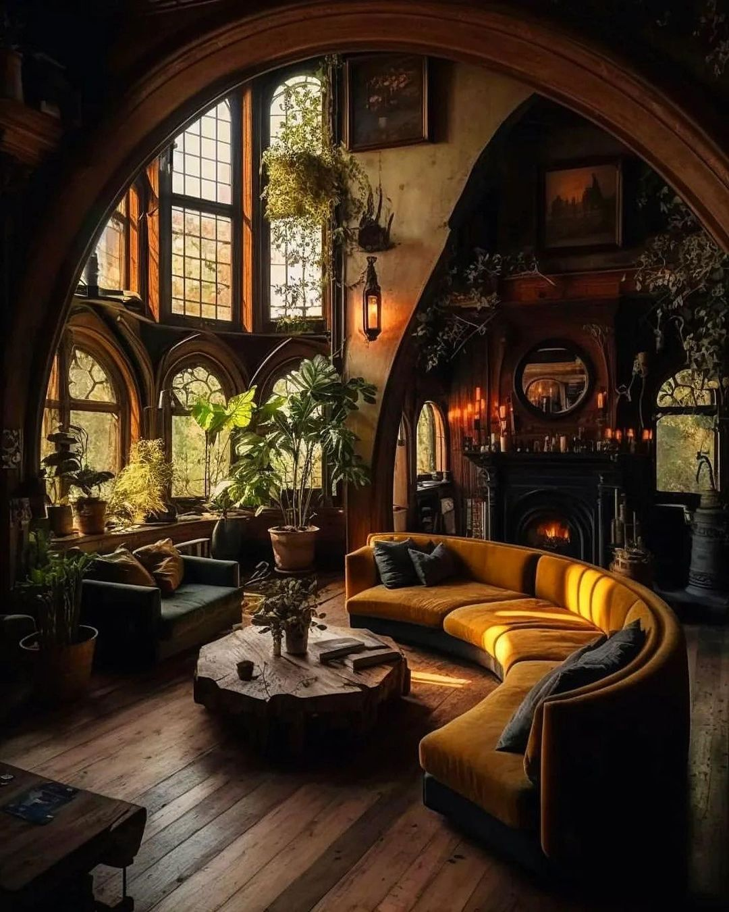
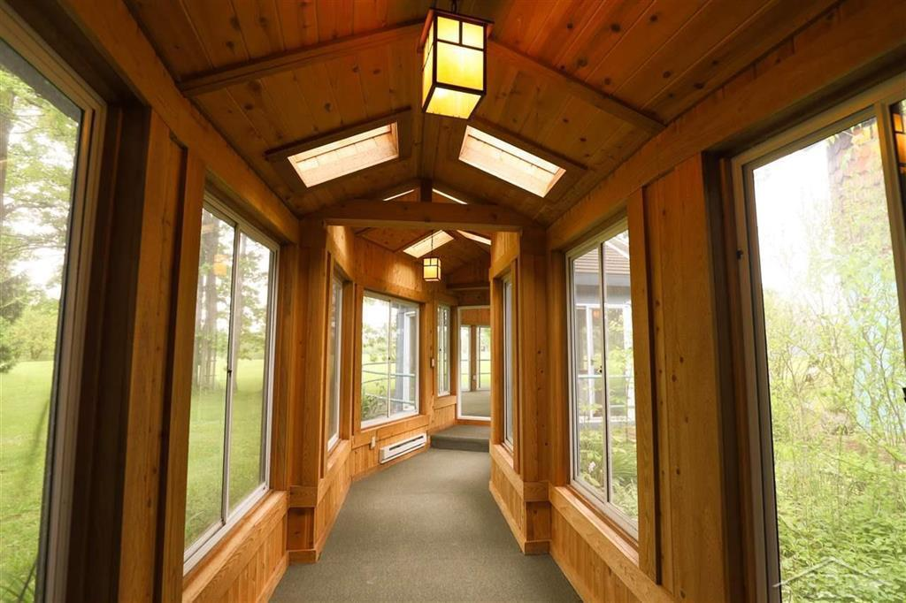
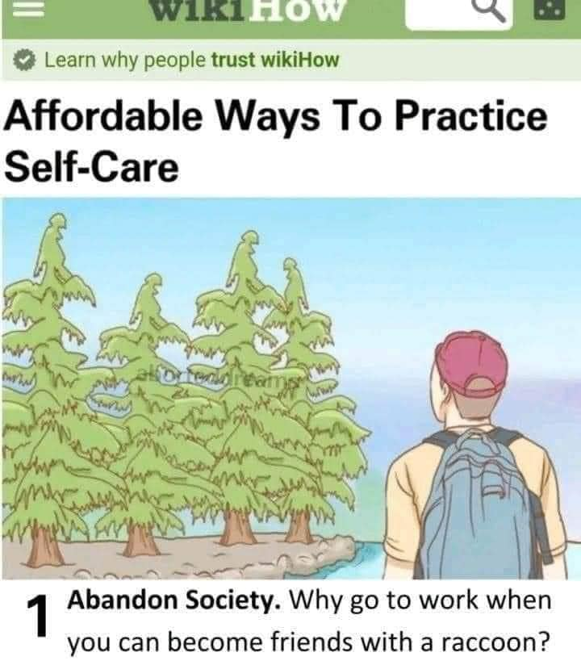
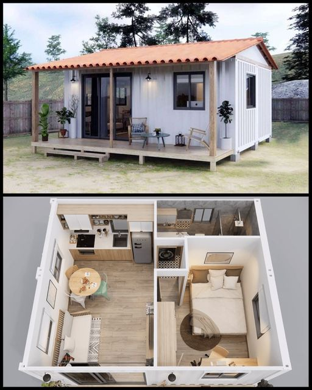
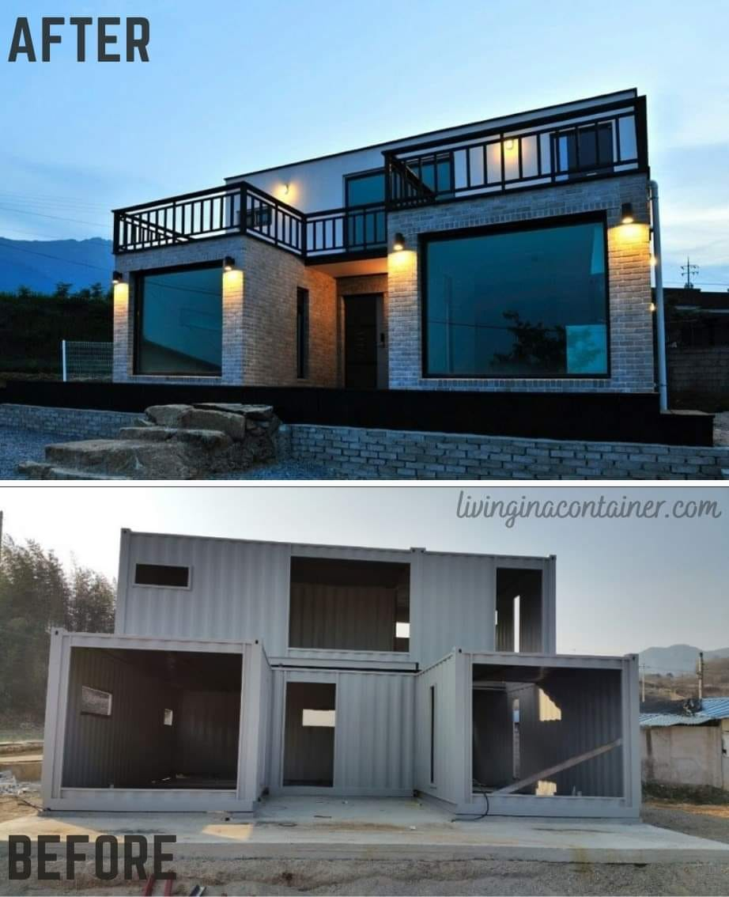
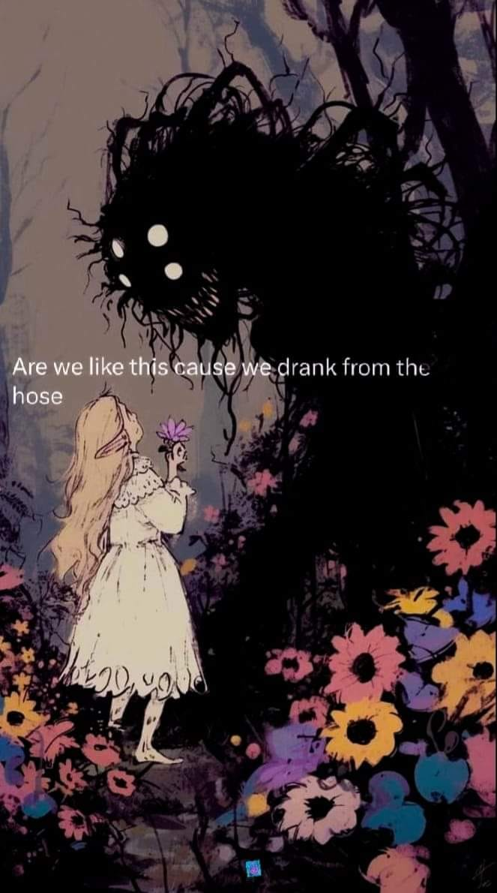
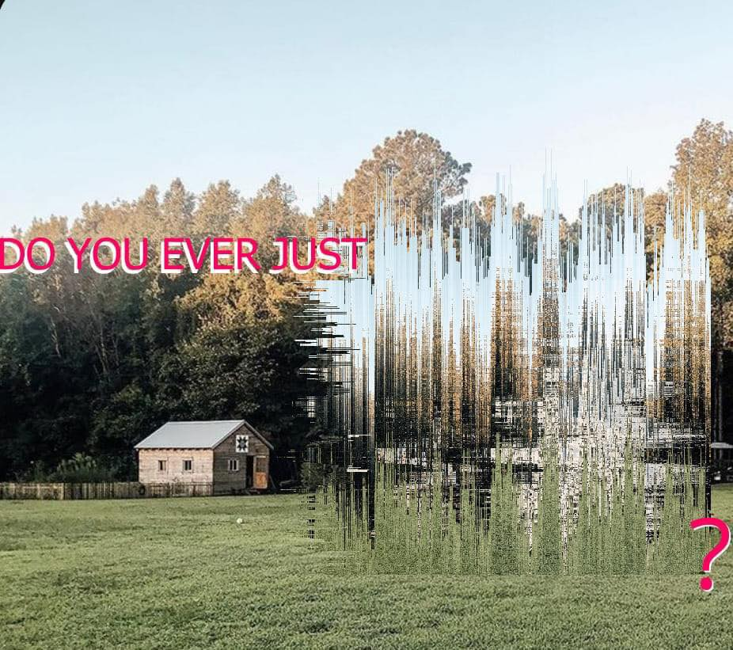

![This meme is a humorous image of a man in a 19th-century-style painting, specifically "The Angelus" by Jean-François Millet. The image shows a man standing in a field, holding a pitchfork, with a look of intense frustration. The text "I'm not lazy, I'm just on [insert time]!" is written above the man's head, implying that he's not actually working, but rather taking a break.](70396B53-D9E2-41EF-9EF4-FA2F67FD89C3.jpeg)
This meme is a humorous image of a man in a 19th-century-style painting, specifically "The Angelus" by Jean-François Millet. The image shows a man standing in a field, holding a pitchfork, with a look of intense frustration. The text "I'm not lazy, I'm just on [insert time]!" is written above the man's head, implying that he's not actually working, but rather taking a break.

The meme is a humorous illustration of a cat's perspective on the idea of "softness." It shows a cat's room with multiple cats sleeping, and a quote at the bottom that reads: "I want softness for everyone who knows the sharp edges of life." The image is meant to be a comforting and soothing visual, with the cats' peaceful sleep and the quote's message of empathy and understanding.
![This meme is a humorous commentary on the concept of "cottagecore," a popular online aesthetic that celebrates a romanticized, rural, and often fantastical view of life. The text "is cottagecore actually your aesthetic" is presented in a playful, cursive font, while the response "or do you just yearn for the means to provide for yourself and your community away from the soul-crushing grip of capitalism?" is written in a more serious, block-like font. The image itself is not described, as it is not possible to provide a description of something that cannot be seen.](148491414_1395406877518752_1482888999266907316_n.jpg)
This meme is a humorous commentary on the concept of "cottagecore," a popular online aesthetic that celebrates a romanticized, rural, and often fantastical view of life. The text "is cottagecore actually your aesthetic" is presented in a playful, cursive font, while the response "or do you just yearn for the means to provide for yourself and your community away from the soul-crushing grip of capitalism?" is written in a more serious, block-like font. The image itself is not described, as it is not possible to provide a description of something that cannot be seen.
![This meme is a humorous comparison between two contrasting images. The top image depicts a medieval-style scene with a monk, a castle, and a crowd of people, with the text "THE OLD WORLD IS ENDING..." above it. The bottom image shows a post-apocalyptic scene with a group of people living in a new, sustainable environment, with the text "A NEW EARTH IS FORMING..." above it. The meme is meant to be humorous and satirical, suggesting that the old world is ending and a new, better world is being formed.](267402505_4838520402836003_2742750630610652629_n.jpg)
This meme is a humorous comparison between two contrasting images. The top image depicts a medieval-style scene with a monk, a castle, and a crowd of people, with the text "THE OLD WORLD IS ENDING..." above it. The bottom image shows a post-apocalyptic scene with a group of people living in a new, sustainable environment, with the text "A NEW EARTH IS FORMING..." above it. The meme is meant to be humorous and satirical, suggesting that the old world is ending and a new, better world is being formed.

The meme is a darkly humorous image of a person being devoured by a forest of trees and animals, with a full moon in the background. The text "Feed your oppressors to the land" is written in a bold, gothic font at the bottom of the image. The overall tone is one of dark, satirical humor, implying that one's enemies should be made to suffer in a way that is both literal and metaphorical.

This meme is a humorous image of a rural landscape with a fence, trees, and a sign that says "Create a life you don't need a vacation from." The image is meant to be ironic, suggesting that a person should create a life that is so fulfilling and enjoyable that they don't need to take a break from it. The text is a play on the popular phrase "create a life you don't need a vacation from," which is often used to encourage people to live their lives in a way that is not just a .

This meme is a humorous image with a caption that pokes fun at the idea of "giving something a makeover" or "giving something a new look" by using an old, familiar phrase in a new and unexpected way. The image shows a cartoon man sitting at a table in a garden, surrounded by animals, eating a meal, while a record player plays music in the background. The text above the image reads: "stop glamorizing 'the grind' and start glamorizing whatever this is".
This meme features a person walking through a garden, with a quote overlayed on top. The text reads: "They can't control people who are self-dependent and know how to take care of themselves. This is why they don't teach you the basic skills of survival at school. They teach you how to depend on the system." The image is likely a photo of a person walking through a garden, with a garden or a park in the background.

This meme features a woman walking away from a rural setting, with a humorous quote about her decision to leave her life behind. The text reads: "And one day she decided people suck...and wandered off into the fields." The image is meant to be humorous and relatable, poking fun at the idea of wanting to escape from the stresses of life.
![The meme is a humorous take on a person's lack of social planning. The text at the top reads "Me: Sorry, I can't hang out later, I have plans" and the response is "Me, later". The image below is a drawing of a person standing in front of a tree, with the tree's roots and branches wrapping around them, implying they're being "blended" into the tree. The caption "Figure 2-32: Allow the Tree's Aura to Blend with Your Own" is a tongue-in-cheek reference to a supposed "spiritual" or "new age" practice.](298991259_1944626975728355_2811882133351407689_n.jpg)
The meme is a humorous take on a person's lack of social planning. The text at the top reads "Me: Sorry, I can't hang out later, I have plans" and the response is "Me, later". The image below is a drawing of a person standing in front of a tree, with the tree's roots and branches wrapping around them, implying they're being "blended" into the tree. The caption "Figure 2-32: Allow the Tree's Aura to Blend with Your Own" is a tongue-in-cheek reference to a supposed "spiritual" or "new age" practice.

The meme is a playful invitation to a gathering of frogs, where they're having a party around a campfire under the moon. The image features a cartoon moon with a smiling face, surrounded by frogs in various costumes, playing instruments, and dancing. The text at the top of the image reads, "Unless you're doing whatever is going on here, please don't invite me anywhere."

This meme is a humorous commentary on the state of human existence. The text reads: "humans really could have had a beautiful little existence on earth just creating art and eating fruit. instead we have credit scores and taxes." The meme pokes fun at the idea that humans have become so focused on material wealth and financial success that we have lost the simple, simple pleasures of life.

This meme is a humorous take on the common phrase "I have to work today when I'd rather be doing something else." The image is a fantastical, cartoon-like map of a world that includes a variety of environments, such as mountains, forests, and oceans. The text at the top reads, "Tragic that I have to work today when all I want to do is be in one of these places."

The meme is a humorous tweet that expresses frustration with the idea that humans were born on a planet that has a perfect environment for growing food, yet they still have to deal with financial issues and have a bad credit score. The text reads: "We were born on a planet that can grow food in every direction, and we're still f**king up so bad that I got a credit score."
This meme is a humorous comparison between a person's expected post-apocalyptic outfit and the actual reality. The text at the top reads, "What I expected my apocalyptic outfit to look like vs what it is." The image on the left shows a woman in a tough, sci-fi inspired outfit, while the images on the right show a woman in a simple, practical outfit, feeding chickens in a rural setting.
This meme is a humorous commentary on the modern human experience. The text reads, "Damn can you imagine being a human during the paleolithic age just eating salmon and berries and storytelling around campfires and star gazing... no jobs, no traffic, no ads, no poverty, no capitalism, no trauma, just pure vibes." The meme pokes fun at the idea of how much simpler and more peaceful life was in the past, compared to the modern world's many stresses and complexities.
![The meme is a comic strip that illustrates the changing nature of work and technology over time. The first panel shows a conversation between a junior and a senior, with the junior asking "Where do you see yourself in 5 years?" The second panel shows the senior working in a traditional office, while the third panel shows the junior working in a modern, high-tech environment. The final panel shows a farmer working in a field, with the text "Where do you see yourself in 5 years?" appearing again, implying that the answer is "as a farmer".](342215960_2131496450375442_8233139430270804870_n.jpg)
The meme is a comic strip that illustrates the changing nature of work and technology over time. The first panel shows a conversation between a junior and a senior, with the junior asking "Where do you see yourself in 5 years?" The second panel shows the senior working in a traditional office, while the third panel shows the junior working in a modern, high-tech environment. The final panel shows a farmer working in a field, with the text "Where do you see yourself in 5 years?" appearing again, implying that the answer is "as a farmer".
![This meme is a humorous take on the changing nature of food production and consumption in the United States. It presents a series of increasingly absurd and humorous statements about the history of American food habits, starting with a 19th-century scenario where 50% of Americans were farmers, followed by a 1945 scenario where Americans were growing 45% of their food in their backyards, and finally a 2020 scenario where Americans were growing 0.1% of their food in their backyards. The text is presented in a playful, tongue-in-ear style, with the company's name and a @naturesupplyco handle. The text is presented in a playful, tongue-in-ear style, with the company's name and a @naturesupplyco handle.](344563703_984006489677391_6490108071181703300_n.jpg)
This meme is a humorous take on the changing nature of food production and consumption in the United States. It presents a series of increasingly absurd and humorous statements about the history of American food habits, starting with a 19th-century scenario where 50% of Americans were farmers, followed by a 1945 scenario where Americans were growing 45% of their food in their backyards, and finally a 2020 scenario where Americans were growing 0.1% of their food in their backyards. The text is presented in a playful, tongue-in-ear style, with the company's name and a @naturesupplyco handle. The text is presented in a playful, tongue-in-ear style, with the company's name and a @naturesupplyco handle.

This meme is a comparison of two aerial images of a farm, one taken in 2010 and the other in 2022. The top image shows a small, empty farm with a few buildings, while the bottom image shows a much larger and more developed farm with many more buildings and a large number of cars. The text above the images reads "Limestone Farm - May 2010" and "Limestone Farm - May 2022".

This meme is a humorous quote from a book, juxtaposed with a tweet from a famous person. The quote, from "The Panda's Thumb" by Stephen Jay Gould, is a witty and satirical commentary on the relationship between intelligence and physical ability. The tweet from "The Amazing" (Ama) Udofa is a humorous observation on the importance of creativity and talent in the face of adversity.
The meme is a picture of a cozy library with a large window overlooking the ocean. The caption reads "I can see my house from here" in a playful, sarcastic tone, implying that the speaker is not actually seeing their house from the library, but rather is enjoying a relaxing and scenic view.

The meme is a humorous image of a dimly lit, old-fashioned study with a desk, a chair, and a lamp. The text on the desk reads "I'm not lazy, I'm just on energy-saving mode". The image is likely meant to poke fun at the idea of being "on energy-saving mode" as a way to avoid doing work or being productive.
This meme features a dark, cozy room with a bed, bookshelves, and a large window. The text "I don't need a therapist, I just need a library and a window" appears in the image, implying that the speaker finds comfort and solace in the quiet, peaceful environment. The image is meant to be humorous and relatable, suggesting that some people can find emotional support in a simple, quiet environment.

This meme is a humorous image of a dark, Gothic-style living room with a large, ornate fireplace. The text at the top of the image reads "When you finally get to the point where you're not even mad at your life". The image is meant to be humorous and relatable, poking fun at the idea that some people's lives are so mundane and uneventful that they're not even angry about it.

The meme is a humorous comparison between two movie titles. The top image is a mining scene, with the text "In Search of Gold" above it. The bottom image is a scene of people walking through a green field, with the text "We lost the diamond" above it. The meme is poking fun at the idea that the second title is a more accurate description of what happened in the first movie.

The meme is a humorous image of a small, cozy cabin in the woods, with a desk and chair in the center. The text "I'm not lazy, I'm just on energy-saving mode" is written on a sign above the desk. The image is meant to poke fun at the idea of being "lazy" by presenting it as a legitimate, environmentally-friendly option.

The meme is a picture of a long, narrow hallway with many windows on one side and a wall of doors on the other. The text "I'm not arguing, I'm just explaining why I'm right" is written on a sign on the wall. The image is meant to be humorous because it's a literal representation of someone being stubborn and refusing to listen to others.
The meme is an image of a dark, ornate, and luxurious-looking room, possibly a library or study, with a large window and a high ceiling. The text "I'm not lazy, I'm just on energy-saving mode" is written in a small, curved font at the top of the image. The image is likely intended to be humorous, implying that the person is not actually doing nothing, but rather conserving energy to be more productive later.
![This meme is a humorous take on the idea that one's investment portfolio would be better off if they were to live in a different time and place. The text at the top reads "I would go to Wall Street if..." and the four images below show different scenarios, with the corresponding text: "this was the stock market", "this was the net growth", "these were the workers", and "this was the market". The meme is poking fun at the idea that one's financial situation would be better if they were to live in a different time and place, with each image showing a different scenario.](347108536_1399617554157181_2706102810900139093_n.jpg)
This meme is a humorous take on the idea that one's investment portfolio would be better off if they were to live in a different time and place. The text at the top reads "I would go to Wall Street if..." and the four images below show different scenarios, with the corresponding text: "this was the stock market", "this was the net growth", "these were the workers", and "this was the market". The meme is poking fun at the idea that one's financial situation would be better if they were to live in a different time and place, with each image showing a different scenario.
![This meme is a humorous commentary on the societal expectation of needing a job. It features an image of three women on a beach, but instead of being in a beach setting, they are actually in a painting of a beach, and they're all nude. The text at the top of the image reads, "Why do humans need jobs, why can't I just sit on a beach with my tits out and stare into the ocean until I die?" The image is a satirical take on the idea that people are forced to work for a living, and it's meant to be humorous and relatable.](349057855_1313903872671218_6753754338794363973_n.jpg)
This meme is a humorous commentary on the societal expectation of needing a job. It features an image of three women on a beach, but instead of being in a beach setting, they are actually in a painting of a beach, and they're all nude. The text at the top of the image reads, "Why do humans need jobs, why can't I just sit on a beach with my tits out and stare into the ocean until I die?" The image is a satirical take on the idea that people are forced to work for a living, and it's meant to be humorous and relatable.

This meme is a humorous story about a person's experience at a campsite, where they are initially excited to have a $200,000 fifth wheel that costs twice as much as their house. The story is told in a humorous, conversational tone, with a mix of personal anecdotes and jokes. The text includes various references to camping and the author's experience at the campsite.
![The image features a quote from Alan Watts, a philosopher and writer, alongside a black-and-white photograph of him. The quote is displayed in white text on a black background, reading: "THE MOST DANGEROUS RISK OF ALL: THE RISK OF SPENDING YOUR LIFE NOT DOING WHAT YOU WANT ON THE BET YOU CAN BUY YOURSELF THE FREEDOM TO DO IT LATER." Below the quote, in smaller white text, is the attribution "- Alan Watts". The image is cropped at the top and bottom, with only a portion of Alan Watts' face visible in the photograph.](348714763_1203479206994968_7118009938204433735_n.jpg)
The image features a quote from Alan Watts, a philosopher and writer, alongside a black-and-white photograph of him. The quote is displayed in white text on a black background, reading: "THE MOST DANGEROUS RISK OF ALL: THE RISK OF SPENDING YOUR LIFE NOT DOING WHAT YOU WANT ON THE BET YOU CAN BUY YOURSELF THE FREEDOM TO DO IT LATER." Below the quote, in smaller white text, is the attribution "- Alan Watts". The image is cropped at the top and bottom, with only a portion of Alan Watts' face visible in the photograph.
This meme is a picture of a cozy room with a high ceiling, featuring a comfortable-looking couch, a bookshelf, and a guitar. The text "I'm not lazy, I'm just on energy-saving mode" is written in a playful, cursive font above the couch. The image is meant to be humorous, suggesting that the person is simply conserving energy, rather than being lazy.
This meme is a humorous commentary on the idea of owning something by living in it. The image shows an aerial view of a communal garden or "commune" with several houses and a greenhouse. The text above the image reads "owning the commies by living in a commune".

The meme is a humorous image of a library with a large, abandoned library with a massive, overgrown library with a large, overgrown library with a large, overgrown library. The text in the image reads: "I'm not arguing, I'm just explaining why I'm right." The image is meant to be humorous and ironic, poking fun at the idea of a library being a place of learning and knowledge, but instead being a place of overgrowth and decay.

The meme is a visual joke that contrasts two types of gardens: a wild, untamed "Eco System" (with a house in the background) and a well-manicured, luxurious "Ego System" (with a grand house and pool). The text at the top reads "Eco System" and at the bottom reads "Ego System". The humor comes from the idea that the two types of gardens are so different in style and quality, with the "Ego System" being a symbol of wealth and excess.

This meme is a visual joke that uses a picture of a tree that has fallen over, but still has a few branches and leaves that are still alive. The text that appears in the image says "When you fall, but you don't give up" and is written in a way that the word "fall" is in a different color than the rest of the text, and the word "don't" is in a different color than the rest of the text. The meme is making a humorous point about perseverance and resilience.

The meme is a humorous comparison between a lawn that has been left unattended for three years and a lush, overgrown garden. The top image shows a barren, weed-covered lawn with a few bare trees, while the bottom image shows a vibrant, flowering garden with a variety of plants and trees. The text at the top reads "Results from a No Lawn experiment after 3 years" and the bottom image has the year "2023" written on it.
This meme is a humorous image of a small, simple hut with a tree growing out of it, with a child sitting under the tree's branches. The text at the top reads "Perfect example of..." and the text at the bottom reads "Respect Nature & Nature will give you back". The image is meant to be a playful and ironic commentary on the idea that if you treat nature with respect, it will reward you with something wonderful.

This meme is a humorous image of a small, rustic garden with a few rows of vegetables and a small wooden shed in the background. The text "Don't call it a dream, call it a plan" appears in a large, white font at the top of the image. The image is meant to be ironic, implying that the garden is not just a dream, but a well-planned and successful project.
The meme is a split-screen image of a brick wall with a broken arch. The left side shows a complete arch, while the right side shows a broken arch with a missing section. The text "I'm not arguing, I'm just explaining why I'm right" appears above the broken arch.
The meme is an image of a grand, medieval-style house in a lush forest, with a winding stone path leading to the entrance. The text "I'm not arguing, I'm just explaining why I'm right" is written on a sign on the door. The image is a humorous commentary on the common phenomenon of people using the phrase "I'm not arguing" to justify their own aggressive or defensive behavior.
The meme features a cartoon skeleton with a body made of plants and flowers, with a quote from E. M. – “ I hope the most divers little ec
The meme is a humorous image of a small, idyllic neighborhood with several houses and a garden. The image is captioned "I'm not arguing, I'm just explaining why I'm right." The meme is likely referencing a common online phenomenon where someone is being stubbornly argumentative and refusing to listen to others' perspectives.
![This meme is a humorous comparison between the natural environments of our ancestors and our descendants. The top image shows a lush, green grassy field with wildflowers, representing our ancestors' lawn. The middle image is a perfectly manicured lawn with a lawn mower, representing our current lawn. The bottom image is a barren, dry, and cracked landscape, representing our descendants' lawn. The text at the top reads "Your ancestors' lawn", at the middle reads "Your lawn", and at the bottom reads "Your descendants' lawn".](353858987_1655484891621913_8721579299169160193_n.jpg)
This meme is a humorous comparison between the natural environments of our ancestors and our descendants. The top image shows a lush, green grassy field with wildflowers, representing our ancestors' lawn. The middle image is a perfectly manicured lawn with a lawn mower, representing our current lawn. The bottom image is a barren, dry, and cracked landscape, representing our descendants' lawn. The text at the top reads "Your ancestors' lawn", at the middle reads "Your lawn", and at the bottom reads "Your descendants' lawn".
The meme is a humorous image of a person sitting inside a bear's body, with the bear's head and body made of a giant, furry, and fluffy bear costume. The text "I can smell the desperation" is overlaid on the image, suggesting that the person inside the bear is trying to escape or is in a difficult situation. The image is a playful and absurd take on the idea of being trapped or overwhelmed.

This meme is a visual representation of the relationship between ego and nature. The image shows a person (Ego) at the center, surrounded by various animals and objects, which are connected to the person. The text "Ego" is above the person, and "Nature" is above a separate circle of animals and objects, which are connected to it. The idea is that the person's ego is separate from and connected to the natural world, but also connected to it through various animals and objects.

The meme is a humorous comparison between the before and after of a lawn. It shows a house with a lawn in the "before" picture, and a house with a garden in the "after" picture, with a caption that says "Two years of progress converting a water dependent lawn to native plants using a lawn removal rebate from the water company, Southern California". The joke is that the house's lawn has been replaced with a garden, implying that the owner has made a successful effort to reduce their water usage.
![This meme is a humorous take on the concept of individualism and the idea that it can be a self-fulfilling prophecy. The text on the left says, "They sell us individualist philosophy," and the text on the right says, "Because we can't defeat them alone." The image is likely a still from a popular anime or cartoon, showing a character looking out of a window or a window-like structure, with a determined or sad expression. The character is likely a protagonist or hero, and the image is meant to convey the idea that even when we are alone, we can still be a threat to others.](347242427_266986319143255_883400572485867723_n.jpg)
This meme is a humorous take on the concept of individualism and the idea that it can be a self-fulfilling prophecy. The text on the left says, "They sell us individualist philosophy," and the text on the right says, "Because we can't defeat them alone." The image is likely a still from a popular anime or cartoon, showing a character looking out of a window or a window-like structure, with a determined or sad expression. The character is likely a protagonist or hero, and the image is meant to convey the idea that even when we are alone, we can still be a threat to others.
![This meme is a humorous commentary on the idea of "sustainable living" in a hyper-ironic and satirical way. The first panel shows a person marveling at the plants on a building, with the text "Wow, so progressive!" The second panel shows a person looking at a small house in a garden, with the text "Ew, flyover country." The meme is poking fun at the idea that "sustainable living" is often associated with high-end, modern, and luxurious buildings, while "sustainable living" in a small, rural, or "flyover" area is often seen as a less-appearing, less-pleasing, and less-pleasant place.](354453852_10100853912993488_8040325458239893817_n.jpg)
This meme is a humorous commentary on the idea of "sustainable living" in a hyper-ironic and satirical way. The first panel shows a person marveling at the plants on a building, with the text "Wow, so progressive!" The second panel shows a person looking at a small house in a garden, with the text "Ew, flyover country." The meme is poking fun at the idea that "sustainable living" is often associated with high-end, modern, and luxurious buildings, while "sustainable living" in a small, rural, or "flyover" area is often seen as a less-appearing, less-pleasing, and less-pleasant place.

![This meme features a parrot with a shocked expression, captioned "you, trapped in the ideology of capitalism" and "the things that remind you another world is possible". The image is meant to be humorous and relatable, poking fun at the idea that even in a capitalist society, there are still people who are aware of and want to change the system. The parrot's expression is meant to convey a sense of surprise and wonder at the idea of an alternative world, which is a common feeling for those who are aware of the problems of capitalism and want to change it.](356396518_654524900037251_7614553156118395281_n.jpg)
This meme features a parrot with a shocked expression, captioned "you, trapped in the ideology of capitalism" and "the things that remind you another world is possible". The image is meant to be humorous and relatable, poking fun at the idea that even in a capitalist society, there are still people who are aware of and want to change the system. The parrot's expression is meant to convey a sense of surprise and wonder at the idea of an alternative world, which is a common feeling for those who are aware of the problems of capitalism and want to change it.

This meme is a humorous commentary on the way of life of our ancestors. The text reads: "They called our way of life primitive, then created a way of life that destroys the earth in less than 200 years." The image is likely a simple, dark background with a small, circular icon of a person, possibly a cartoon or a real person's photo, but the text is the main focus.

This meme is a humorous image of a character from the animated TV series "Simpson's" named "Bart" from the episode "The Bart-It-All" in 1993. The character is depicted with a sandwich and a drink, and the text "You guys go ahead, I'm gonna dilly dally" appears above it. The phrase is a play on words, using the phrase "dilly dally" which means to delay or put off something.
![This meme is a play on the phrase "is this a joke?" It features a character from the anime "Lucky Star" in a state of confusion, with a speech bubble saying "Is this freedom?" The text at the top reads "Men who literally owned enslaved human beings" and the text at the bottom reads "A piece of paper in 1776." The meme is a commentary on the irony that the US Declaration of Independence, which is often seen as a symbol of American freedom, was written by and for people who owned slaves. The character's confusion and question is a humorous way of pointing out the hypocrisy of the founding fathers.](358382891_217076481284222_6025931579309757231_n.jpg)
This meme is a play on the phrase "is this a joke?" It features a character from the anime "Lucky Star" in a state of confusion, with a speech bubble saying "Is this freedom?" The text at the top reads "Men who literally owned enslaved human beings" and the text at the bottom reads "A piece of paper in 1776." The meme is a commentary on the irony that the US Declaration of Independence, which is often seen as a symbol of American freedom, was written by and for people who owned slaves. The character's confusion and question is a humorous way of pointing out the hypocrisy of the founding fathers.

This meme features a photo of a white opossum wearing a cowboy hat, accompanied by a quote in a western-style font. The text reads: "I SPIT I CUSS DAMN SURE RAISE A FUSS BUT MOST OF ALL I ADVOCATE FOR THE TOTAL EMANCIPATION OF THE WORKING CLASS." The image is humorous and ironic, as it juxtaposes a typical western-style quote with a reference to a working-class movement, while also featuring an opossum, an animal not typically associated with the western genre.
![The meme is a humorous take on the idea that someone who has never tried forest bathing (a form of therapy that involves spending time in nature to reduce stress) is being asked to do so. The text at the top of the image reads: "Therapist: 'Have you ever tried forest bathing? You should get out to the woods more. Trees produce ions that relieve stress, lower blood pressure, and some even find spirituality in it.'" The image below is a dark, eerie forest scene with a figure in the distance, and the text at the bottom reads: "Me and my friends six months later: THE HUMAN WORLD HAS FAILED."](356417946_214115704913633_4038377648863355901_n.jpg)
The meme is a humorous take on the idea that someone who has never tried forest bathing (a form of therapy that involves spending time in nature to reduce stress) is being asked to do so. The text at the top of the image reads: "Therapist: 'Have you ever tried forest bathing? You should get out to the woods more. Trees produce ions that relieve stress, lower blood pressure, and some even find spirituality in it.'" The image below is a dark, eerie forest scene with a figure in the distance, and the text at the bottom reads: "Me and my friends six months later: THE HUMAN WORLD HAS FAILED."
![This meme is a humorous take on the concept of "personal gain" versus "community effort." The image features two panels of the character Jean-Luc Picard from Star Trek: The Next Generation, but with his face replaced with a "meme face" expression. The first panel shows him looking confused, while the second panel shows him looking triumphant. The text in the first panel reads "Glorifying Individual Achievement & Personal Gain," while the second panel reads "Celebrating Community & Collective Effort." The meme is poking fun at the idea that people often prioritize individual success over collective success, and the image is meant to be humorous and relatable.](358090368_10159484360001794_2295758405620219665_n.jpg)
This meme is a humorous take on the concept of "personal gain" versus "community effort." The image features two panels of the character Jean-Luc Picard from Star Trek: The Next Generation, but with his face replaced with a "meme face" expression. The first panel shows him looking confused, while the second panel shows him looking triumphant. The text in the first panel reads "Glorifying Individual Achievement & Personal Gain," while the second panel reads "Celebrating Community & Collective Effort." The meme is poking fun at the idea that people often prioritize individual success over collective success, and the image is meant to be humorous and relatable.

This meme is a humorous image that juxtaposes a serene and peaceful scene of a pond with a famous painting by Claude Monet, "The Water Lilies," with a quote that seems to be a misquote of the actual quote "The more I learn, the more I realize how much I don't know." The actual quote is not present in the image. The actual quote is a quote from the famous artist, and the image is a quote from the famous artist.

This meme is a humorous commentary on the relationship between a developer's intentions and the actual outcome of their work. The image shows a character with a "broken" expression and a "working as intended" expression, with the text "The system is broken and must be fixed" and "The system is working exactly as intended and must be destroyed". The meme pokes fun at the idea that a system can be both broken and working as intended at the same time, highlighting the absurdity of this situation.

The meme is a visual representation of a tiny house with a large, empty space inside. The text "I don't have a tiny house, I have a tiny mind" is written above the image, implying that the person's mind is so small that they can't even fill the tiny house. The joke is that the person's mind is so small that it's not even a match for the tiny house, making it a humorous and relatable observation.
![This meme is a humorous image featuring comedian and actor Brian Johnson, known for his "I'm not a [insert job] I'm a [insert job]!" catchphrase. The image shows Johnson with a serious expression, and the text "I'm not a doctor, I'm a doctor" is written below. The meme is a play on the idea that someone's job title is not what they're actually doing, but rather what they're not.](362945229_10159697179431309_2810593649299832957_n.jpg)
This meme is a humorous image featuring comedian and actor Brian Johnson, known for his "I'm not a [insert job] I'm a [insert job]!" catchphrase. The image shows Johnson with a serious expression, and the text "I'm not a doctor, I'm a doctor" is written below. The meme is a play on the idea that someone's job title is not what they're actually doing, but rather what they're not.
The image is a collage of multiple scenes from the anime "Spirited Away" by Studio Ghibo. The text "I have a 100% success rate" is written at the top, followed by "I've never lost a bet". The image is a humorous commentary on the idea of a person who has never lost a bet, but is actually a terrible person.

This meme is an image of the Black Panther movie poster with the city of Wakanda in the background. The text "I can see for miles" is written in a bold, comic book-style font, referencing the song of the same name by The . The image is likely a joke about the city's impressive views, with the song's lyrics implying that the city's location allows for a wide .

The meme is an image of a futuristic, towering skyscraper made entirely of books, with a massive, glowing "I" in the center of the building. The image is accompanied by the text "I" and the caption "I". The meme is likely a humorous commentary on the idea that a single, self-identifying "I" can be the entire foundation of a massive, complex structure.

This meme is a visual representation of a city's infrastructure being completely overgrown by nature. The image shows a city's roads, buildings, and infrastructure being covered in lush greenery, with trees and vines crawling over everything. The text "I'm not saying we're not doing anything, I'm just saying we're doing it differently" appears in the image, implying that the city is being taken over by nature in a way that is not being actively controlled.
![This meme is a split-image comparison of two illustrations. The top image depicts a beautiful woman in a lush garden, surrounded by flowers and trees, with a gentle expression on her face. The text "I'm not a gardener, I'm a gardener-er" is written above her. The bottom image shows a chaotic and disheveled garden, with weeds and trash scattered everywhere. The text "I'm not a gardener, I'm a gard-ner" is written above it. The meme is a humorous comparison of two different approaches to gardening, with the top image representing a peaceful and organized approach, and the bottom image representing a chaotic and disorganized approach.](7.JPG)
This meme is a split-image comparison of two illustrations. The top image depicts a beautiful woman in a lush garden, surrounded by flowers and trees, with a gentle expression on her face. The text "I'm not a gardener, I'm a gardener-er" is written above her. The bottom image shows a chaotic and disheveled garden, with weeds and trash scattered everywhere. The text "I'm not a gardener, I'm a gard-ner" is written above it. The meme is a humorous comparison of two different approaches to gardening, with the top image representing a peaceful and organized approach, and the bottom image representing a chaotic and disorganized approach.
![The meme is an image of a futuristic city with towering, curved buildings and lush greenery, with the text "The future of cities is not just about buildings, it's about life" written on a sign in the city's central square. The city is surrounded by a large, circular lake and is filled with towering, curved buildings that seem to be made of a combination of plants and technology. The city is filled with lush greenery and is surrounded by a large, circular lake, making it a unique and sustainable place to live.](305313495_10162351754704488_7203484898010573788_n.jpg)
The meme is an image of a futuristic city with towering, curved buildings and lush greenery, with the text "The future of cities is not just about buildings, it's about life" written on a sign in the city's central square. The city is surrounded by a large, circular lake and is filled with towering, curved buildings that seem to be made of a combination of plants and technology. The city is filled with lush greenery and is surrounded by a large, circular lake, making it a unique and sustainable place to live.

The meme is a humorous image of a tree made of a computer motherboard, with a green and leafy top. The image is captioned "I told my wife I was going to reboot, she didn't understand." The joke is a play on words, using the computer term "reboot" to mean both restarting a computer and also having a romantic relationship.

The meme is a humorous image of a city, but it's actually a giant forest, with skyscrapers and buildings completely overgrown with vines and trees. The image is captioned "When you finally get that 1st job, but you still live in the parent's basement".
The image is a futuristic cityscape with towering skyscrapers and a lush, green forest in the center. The text "I can see my house from here" is written in a small, humorous font at the top of the image. The city is surrounded by a circular, futuristic-looking road with multiple lanes and a central park.

This meme is a split-screen image of the Jewel Changi Airport in Singapore. The top image shows a stunning, sprawling interior with lush greenery and a massive waterfall. The bottom image shows the same space, but with a giant, giant crystal – the world's largest – that has been installed at the airport. The text in the meme reads: “Jewel Changi Airport – where you can find both a giant crystal and a giant waterfall.”
The meme is a humorous image of a futuristic city, with a large, sprawling metropolis in the background and a small, quaint, and idyllic rural town in the foreground. The text "I don't want to live in the city. I want to live in the countryside." is written in a playful, childlike font, as if a child is speaking. The image is meant to poke fun at the idea that someone would want to live in a small, rural town, but is actually a commentary on the urban vs. rural lifestyle.

This meme is a humorous image of a futuristic city, but it's actually a farming village. The text at the top of the image reads "We are not a city, we are a village of farmers" and the bottom text says "We have 1000 years of experience in not being a city". The image is poking fun at the idea of a city being a futuristic, high-tech place, and instead shows a village of farmers who have been doing the same thing for 1000 years.

The meme is a humorous example of a "how-to" article from the satirical website "wikiHow." The title is "Affordable Ways to Practice Self-Care," and the first "tip" is "Abandon Society. Why go to work when you can become friends with a raccoon?" The image is likely a cartoon or illustration of a person standing in a forest, looking at a group of trees, with a raccoon in the distance.

The meme is a screenshot of a Facebook post from a page called "Off Grid Living & Survival". The post is titled "Container Home" and features a 3D rendering of a house made from shipping containers, with a caption that reads "Container Home".
![This meme is a humorous illustration of a suburban neighborhood that has been transformed into a sustainable, eco-friendly community. The text "Repair Suburbia" is written at the top, and the image shows a series of houses with solar panels, wind turbines, and a community garden. The text "Less lawn, more planet" is written at the bottom, and the image also includes labels such as "rain barrels", "community compost bins", "clean water canals", and "native plants" to describe the various sustainable features of the community.](374566814_707182938120992_1809783608565864340_n.jpg)
This meme is a humorous illustration of a suburban neighborhood that has been transformed into a sustainable, eco-friendly community. The text "Repair Suburbia" is written at the top, and the image shows a series of houses with solar panels, wind turbines, and a community garden. The text "Less lawn, more planet" is written at the bottom, and the image also includes labels such as "rain barrels", "community compost bins", "clean water canals", and "native plants" to describe the various sustainable features of the community.
![The meme is a screenshot of a tweet from the Twitter account "Comrade California, Empress of Antarctica" (a parody of the Disney character). The tweet reads: "The Dust Bowl was a dress rehearsal for what's coming." The text is presented in a simple, white font on a black background, with the Twitter account's name and the date and time of the tweet ("1:07 PM · 2021-08-20") displayed below. The tweet is a darkly humorous comment on the state of the world, implying that the devastating events of the 1930s (the Dust Bowl) were a precursor to the more catastrophic events that are currently happening.](370547634_863255905339808_3326061194488686419_n.jpg)
The meme is a screenshot of a tweet from the Twitter account "Comrade California, Empress of Antarctica" (a parody of the Disney character). The tweet reads: "The Dust Bowl was a dress rehearsal for what's coming." The text is presented in a simple, white font on a black background, with the Twitter account's name and the date and time of the tweet ("1:07 PM · 2021-08-20") displayed below. The tweet is a darkly humorous comment on the state of the world, implying that the devastating events of the 1930s (the Dust Bowl) were a precursor to the more catastrophic events that are currently happening.

This meme features a character from the anime "Kill La Kill" in a humorous and relatable scenario. The text at the top reads, "Aren't you supposed to be at work?" and the character responds with a sarcastic and humorous explanation of her current situation, listing various excuses for why she's not at work. The text is written in a playful, internet-style format, with a mix of humor and irony.

The meme shows a before-and-after comparison of a forest in the Netherlands. The top image shows a barren, dry field in 2009, while the bottom image shows a lush, green forest in 2022. The text at the bottom of the image reads: "The Ketelbroek food forest is located in Groesbeek, Netherlands. The food forest was started in 2009 by Wouter van Eck and Pieter Jansen and now contains 32 food-producing species of plants on its 2.5 hectares (6 acres) of land."
![This meme is a humorous take on the current state of the internet. It features a photo of a therapist's office, with the therapist and patient sitting on a couch, but with a twist: the patient is not sitting on the couch, but is instead lying on a couch-like bed that is actually a giant mushroom. The text above the image reads: "And is this the global mycelial network in the room with us right now?" The joke is that the therapist is asking a question that is both literal and metaphorical, referencing the idea that the internet is a global network of interconnected computers that can be thought of as a "mushroom" that is spreading and growing in the "room" of the internet.](380813537_10220428442659999_820102163538615483_n.jpg)
This meme is a humorous take on the current state of the internet. It features a photo of a therapist's office, with the therapist and patient sitting on a couch, but with a twist: the patient is not sitting on the couch, but is instead lying on a couch-like bed that is actually a giant mushroom. The text above the image reads: "And is this the global mycelial network in the room with us right now?" The joke is that the therapist is asking a question that is both literal and metaphorical, referencing the idea that the internet is a global network of interconnected computers that can be thought of as a "mushroom" that is spreading and growing in the "room" of the internet.
The meme is a photo of a person covered in leaves and vines, with a serious expression. The image is captioned "Dress for the job you want" in a tongue-in-cheek reference to the idea that one should dress professionally for a job interview. The humor comes from the absurdity of dressing in a way that is literally "for the job" of being a tree or a plant.

This meme is a humorous response to a missed text. The text reads, "hey sorry I missed your text, I am processing a non-stop 24/7 onslaught of information with a brain designed to eat berries in a cave." The joke is that the person is using a humorous and absurd explanation for why they missed the text, implying that their brain is so busy with information that it's like having a brain designed to eat berries in a cave, which is a ridiculous and absurd explanation.

The meme is a humorous commentary on the trend of naming children after celebrities and brands. The image shows a child in a garden, surrounded by flowers and a windmill, with a quote that says "Let's raise kids who can name more plants and animals than celebrities and brand names." The image is a playful way to encourage parents to teach their children about the natural world, rather than the latest pop culture trends.

The meme is a joke about the idea of a "commune" (a community living together) being taken over by a group of "commies" (a pejorative term for communists). The text in the image reads "owning the commies by living in a commune" and is followed by an image of a green, lush garden with a house and a greenhouse. The image is meant to be humorous and ironic, suggesting that the owners of the commune are actually the ones in charge, rather than the "commies" they are trying to control.
The meme is an image of a small, modern, A-frame house with a car parked in front of it. The text "I'm not lazy, I'm just on energy-saving mode" appears on the screen of a phone in the car's window. The meme is a humorous way to describe being tired or needing to conserve energy, like a car's low-power mode.

This meme is a humorous and satirical take on the idea of dating in the modern era. The image shows an old man (Grandpa) watching a young woman (the "me" in the meme) working in a field, with a caption that reads "You won't get anything done, you're just going to get in the way." The text on the image reads "Me, every time I'm trying to work on a project" and "You won't get anything done, you're just going to get in the way."

The meme is a photo of a wall with shelves that have been converted into a storage space for canned goods. The shelves are filled to the brim with cans of food, with some even spilling over onto the floor. The text "I'm not hoarding, I'm just stockpiling" appears at the top of the image.

This meme is a humorous commentary on the idea that people's self-perceptions are often at odds with their actual reality. The image shows a hand reaching up from the depths of a pool of water, surrounded by flowers, with the phrase "I dream of who I am" written above it. The text below it says "outside of capitalism," suggesting that the person's aspirations are not being fulfilled by the societal norms of capitalism.

The meme is a picture of a small, rustic cabin in the woods. The text on the image reads "I'm not arguing, I'm just explaining why I'm right." This is a humorous way of saying that someone is being stubborn or uncooperative, and is using their "right" to be argumentative as an excuse.
This meme is an image of a small, rustic house built on top of a garden, with a large garden below it. The garden is filled with a variety of vegetables and plants, and the house has a small, wooden bridge leading to it. The text "I'm not lazy, I'm just on garden time" appears in the image, implying that the person is taking a break to focus on their garden rather than doing something else.

The meme is a humorous illustration of a tree with a face and a speech bubble, surrounded by a jungle-like environment. The text "The actual trouble is that profit is identified entirely with money, as distinct from the real profit of living with dignity and elegance in beautiful surroundings." is superimposed over the image. The image is likely meant to be humorous and satirical, poking fun at the idea that profit is often prioritized over other values.

The meme is a humorous comparison between two types of lawns: one made of artificial turf and one made of living plants. The text "THIS KILLS LIFE" appears above a photo of a lawn made of artificial turf, while "THIS CREATES LIFE" appears above a photo of a garden or garden-like setting. The meme is saying that while a lawn made of artificial turf is lifeless and life-destroying, a garden or garden-like setting is full of life and life-creating.
![This meme is a humorous image of a house in the middle of a lush, green garden, with a large vegetable garden in the foreground. The text at the top reads "THE GOAL ISN'T GUCCI BAGS" and the text at the bottom reads "IT'S ACRES OF LAND". The meme is making a humorous comparison between the idea of achieving wealth and success through material possessions (Gucci bags) versus having a successful and fulfilling life through hard work and self-sufficiency (owning a large piece of land and growing your own food).](396526882_337132215526562_6975818848604227830_n.jpg)
This meme is a humorous image of a house in the middle of a lush, green garden, with a large vegetable garden in the foreground. The text at the top reads "THE GOAL ISN'T GUCCI BAGS" and the text at the bottom reads "IT'S ACRES OF LAND". The meme is making a humorous comparison between the idea of achieving wealth and success through material possessions (Gucci bags) versus having a successful and fulfilling life through hard work and self-sufficiency (owning a large piece of land and growing your own food).

This meme is a joke about a news article about abandoned golf courses being reclaimed by nature. The text "Abandoned golf courses are being reclaimed by nature" is shown above a picture of a golf course. Below the text is a comic strip of a man who says "Yes... ha ha ha... yes!" as he watches a golf course being reclaimed by nature, but his name "Sickos" is written on a sign in the background, implying he's the one responsible for the golf course being abandoned.

This meme features a cartoon of a person in a kitchen, surrounded by potted plants. The person is holding a potted plant and says "I'll just put them here until the danger of frost passes - probably next April." The image is a humorous commentary on the common practice of moving plants indoors to protect them from cold temperatures, but the person's comment is ironic and humorous because it implies that they will be leaving the plants in the same place for an extremely long period of time.
The meme is a picture of a tiny house made from a shipping container, with a small deck and a hot tub. The caption reads "When you finally get your own home, but it's still a shipping container". The image is humorous because it pokes fun at the idea of living in a small, cramped space, even when it's your own home.

This meme features a cozy cabin interior with a couch, a bookshelf, and a loft bed. The text "I'm not lazy, I'm just conserving energy for my next adventure" appears above the couch, implying that the person is not being lazy, but rather preparing for a future activity. The image is meant to be humorous and relatable, poking fun at the idea that people often use "I'm just conserving energy" as an excuse for laziness.

The meme is a picture of a small, rustic cabin in the woods, with a sign on the door that says "No Humans". The image is likely meant to be humorous or ironic, implying that the cabin is intended for animals or that the owner is trying to escape the world.

This meme is a humorous list of tasks that are often neglected or procrastinated on, with the title "Things I Do In My Spare Time". The text reads: "Water plants, Buy plants, Repot plants, Propagate plants, Talk with plants, and Reroute plants". The image is not described, but the text provides a humorous and relatable list of tasks that are often neglected or procrastinated on.
The meme is an image of a small, modern house made from a shipping container, with a sign on the door that says "I'm not hoarding, I'm just... rede...". The image is likely meant to be humorous, poking fun at the idea of someone's home being cluttered with too many possessions.

The meme is a humorous image of a small, unfinished wooden house in a forest, with a dog standing in front of it. The text "I'm not lazy, I'm just on a 5-year project" appears in the image, implying that the person is taking a long time to complete a simple task. The image is likely meant to be humorous and relatable, poking fun at the idea that people often use the "I'm not lazy, I'm just..." excuse to justify their lack of productivity.
The meme is a photo of a small, modern house made from a shipping container, with a sleek and minimalist design. The text "I just got a new house and I'm so excited to finally have a place to store all my stuff" is written in a childlike, scribbled font on a whiteboard on the wall. The image is a humorous commentary on the idea of a "new house" being a shipping container, implying that the person is not actually moving into a traditional home.
![This meme is a play on the differences between two types of fungi: Mycorrhizae and Ourcorhizae. The text "Mycorrhizae" is written above a drawing of a mushroom's roots, while "Ourcorhizae" is written above a drawing of a mushroom's roots with a hammer and sickle symbol (the symbol of the Soviet Union) incorporated into the roots. The joke is that Mycorrhizae is a type of fungus that forms symbiotic relationships with plants, while Ourcorhizae is a made-up word that sounds similar but is actually a reference to the Soviet Union.](400808062_296241366701066_8486748019467792950_n.jpg)
This meme is a play on the differences between two types of fungi: Mycorrhizae and Ourcorhizae. The text "Mycorrhizae" is written above a drawing of a mushroom's roots, while "Ourcorhizae" is written above a drawing of a mushroom's roots with a hammer and sickle symbol (the symbol of the Soviet Union) incorporated into the roots. The joke is that Mycorrhizae is a type of fungus that forms symbiotic relationships with plants, while Ourcorhizae is a made-up word that sounds similar but is actually a reference to the Soviet Union.

This meme is a humorous illustration of a futuristic cityscape, featuring a sprawling metropolis with towering skyscrapers, flying cars, and other advanced technologies. The image is captioned "I can see for miles and miles" in a playful nod to the classic song "I Can See For Miles" by The Who. The meme is likely used to express a sense of optimism and excitement about the potential of a city's future.
The meme is a picture of a futuristic, high-tech cityscape with towering buildings and advanced technology. The text "I can see for miles and miles and miles" is written in a playful, childlike font at the top of the image, referencing the classic song "I Can See for Miles" by The Who. The image is a humorous take on the song's lyrics, exaggerating the idea of being able to see for miles and miles and miles.

The meme is a split-screen image with a top image of a small, cozy-looking house and a bottom image of a large, luxurious-looking house. The text "I'll be living in the top one" is written above the top image, implying that the speaker will be living in a small, simple house, while the others will be living in a large, luxurious one.

This meme is an image of a small, modern, and minimalist house with a single room and a large deck. The text "Tiny House, Big Ego" appears above the house, suggesting that the house's owner is trying to make up for its small size by being overly proud and self-important. The image is likely meant to be humorous and ironic, poking fun at the idea of someone trying to make a big deal out of a tiny house.

This meme is a simple image of a house with a caption that reads "I can hear you." The image is likely a play on the idea of a house having a "listening" or "listening" feature, but the actual meaning is a play on the phrase "I can hear you" being a phrase that is often used in a different context.

The meme is a split image of a shipping container being converted into a house. The top image shows a large, empty shipping container, while the bottom image shows a cozy, fully-furnished house made from the same container. The text "I'm not arguing, I'm just explaining why I'm right" appears in the top image, implying that someone is being stubborn and refusing to listen to others.

The meme is a humorous image of a shipping container home, with a front door and a small porch. The text "I don't need a house, I need a house that's a house" is written on the front door. The image is a playful take on the idea of living in a tiny home, with a clever and humorous twist on the phrase "I don't need a house, I need a house that's a house".
The meme is a humorous observation about the human experience. It states: "Human beings didn't evolve to get 80% of their view of reality from an electric screen whose contents are illusions crafted by an enemy tribe that specializes in brainwashing and deception."
This meme is a humorous comparison between the typical 30-minute workday and a 6-hour workday in a garden. The left panel shows a person sleeping on a construction site, implying a long and exhausting workday. The right panel shows a person with a "Skunk Ape" mask, implying a long and exhausting day in a garden. The text "Skunk Ape Liberation Union" is likely a joke about the person's job being so exhausting that they're seeking a new job.

The meme is a humorous image featuring a quote from the ancient Greek philosopher Aristotle, which reads: "The greatest crimes are always the ones that are most in the interest of the most powerful." The image is likely a satirical commentary on the idea that those in power are often able to get away with the most heinous crimes. The image is likely accompanied by a wry or sarcastic tone.

This meme is a humorous image of a person building a small cabin using a single sheet of paper, titled "The Squatter". The text reads: "Built in one day by two men. Heats quickly. No under-draughts. Sheet iron stove may be substituted for fireplace. With heavy snow it will keep warm in sub-zero weather. Use 2 x 4 timbers throughout. Use this cabin before you build your prize cabin." The image is likely meant to be humorous and satirical, poking fun at the idea of building a simple, simple cabin.

This meme is a humorous take on the common phrase "I'm not a food, I'm a person." The text reads: "I am not a snack. I am a garden. Take care of me and I can feed you forever." The meme pokes fun at the idea that people often treat others like they're a snack or a meal, rather than a person with needs and feelings.
![This meme is a satirical image that presents a futuristic, eco-friendly house called the "Hemp House." The text above the image reads, "Hemp House: Walls made with Hempcrete, Solar Windows made with Hemp Plastic, Hempcrete is more energy efficient than concrete." Below the image, it says, "Hempcrete is mildew resistant, termite resistant, an excellent sound isolator, and breathable insulator." The image is meant to be humorous and ironic, implying that a house made of hemp is the ultimate eco-friendly and sustainable home.](406784926_864348409026840_668076084986346491_n.jpg)
This meme is a satirical image that presents a futuristic, eco-friendly house called the "Hemp House." The text above the image reads, "Hemp House: Walls made with Hempcrete, Solar Windows made with Hemp Plastic, Hempcrete is more energy efficient than concrete." Below the image, it says, "Hempcrete is mildew resistant, termite resistant, an excellent sound isolator, and breathable insulator." The image is meant to be humorous and ironic, implying that a house made of hemp is the ultimate eco-friendly and sustainable home.
![This meme is a humorous commentary on the difference between the rich and the poor. The text on the left reads: "Everyone is like 'If I was rich, I'd buy...' and then gives a humorous, extravagant wish, such as 'I'd buy designer clothes and diamonds.' However, the meme then subverts this expectation by saying 'I'm over here like I'd buy a greenhouse.'" This is a tongue-in-cheek way of saying that someone who is not wealthy might not have the luxury to buy expensive things, but can still have a simple, practical, and affordable option like a greenhouse.](411136035_759939386176433_956941324890467074_n.jpg)
This meme is a humorous commentary on the difference between the rich and the poor. The text on the left reads: "Everyone is like 'If I was rich, I'd buy...' and then gives a humorous, extravagant wish, such as 'I'd buy designer clothes and diamonds.' However, the meme then subverts this expectation by saying 'I'm over here like I'd buy a greenhouse.'" This is a tongue-in-cheek way of saying that someone who is not wealthy might not have the luxury to buy expensive things, but can still have a simple, practical, and affordable option like a greenhouse.

The meme is a humorous comparison of two images of a front yard. The first image, dated 2022, shows a typical suburban lawn with a few trees and some bushes. The second image, dated 2023, shows the same yard transformed into a lush, overgrown garden with a variety of plants and flowers. The text above the images reads, "Progress after one year converting a water-dependent lawn to 70 species of mostly native plants, Ontario."
The meme is a picture of the "A-Frame" cabin, a small, triangular-shaped house. The image is captioned "I love my tiny home, I can fit my entire family in the loft". The meme is likely used to poke fun at the idea of a small, cozy home being able to fit a large family, implying that the family is actually quite small.
![This meme features a humorous image of a garden with a chicken coop in the background. The text "Start where you are, use what you have, do what you can" is written in a playful, modern font, with the words "Start", "Use", and "Do" in bold. The image is meant to be a humorous and relatable take on the classic phrase "start where you are, use what you have, do what you can", with the addition of a garden and a chicken coop in the background, implying that one can start a garden or a chicken farm with what they have.](415472377_6823475887779134_4973284266174965014_n.jpg)
This meme features a humorous image of a garden with a chicken coop in the background. The text "Start where you are, use what you have, do what you can" is written in a playful, modern font, with the words "Start", "Use", and "Do" in bold. The image is meant to be a humorous and relatable take on the classic phrase "start where you are, use what you have, do what you can", with the addition of a garden and a chicken coop in the background, implying that one can start a garden or a chicken farm with what they have.
![The meme is a humorous commentary on the concept of "foodscaping" or "foodscaping" (a mix-up of "food" and "landscaping"), where each yard has a vegetable garden with fruit trees. The image is an aerial view of a densely populated neighborhood, with each yard filled with lush greenery and trees, creating a beautiful and vibrant landscape. The text at the top of the image reads: "This is called 'Foodscaping'. Each yard has a vegetable garden with fruit trees. Neighbors consult with each other so they can trade the food that is grown. Imagine if people did this everywhere."](418886463_7977828288911952_3872198417965272499_n.jpg)
The meme is a humorous commentary on the concept of "foodscaping" or "foodscaping" (a mix-up of "food" and "landscaping"), where each yard has a vegetable garden with fruit trees. The image is an aerial view of a densely populated neighborhood, with each yard filled with lush greenery and trees, creating a beautiful and vibrant landscape. The text at the top of the image reads: "This is called 'Foodscaping'. Each yard has a vegetable garden with fruit trees. Neighbors consult with each other so they can trade the food that is grown. Imagine if people did this everywhere."

This meme is a before-and-after comparison of a house. The "before" image is a photo of a house made entirely out of shipping containers, with empty spaces and no interior. The "after" image is a photo of a completed, modern home with a beautiful interior, with the text "I'm not lazy, I'm just reorganizing my space" appearing above it.
This meme is a picture of a cozy living room with a fireplace, a comfortable couch, and a beautiful view of the outdoors. The text "I'm not arguing, I'm just explaining why I'm right" appears in a speech bubble above a character's head, implying that the person is being stubborn and refusing to listen to others. The image is meant to be humorous and relatable, poking fun at the tendency to be stubborn and argumentative.

This meme is a humorous take on the phrase "I'm not quite at this level, but..." It features a photo of a house made entirely of coffee cups, with the caption "I'm not quite at this level, but some day I may be able to build my coffee mug house too." The image is a humorous commentary on the idea that someone's ambition to build a house made of coffee cups is not yet a reality.
![The meme is a humorous take on the idea that our ancestors didn't live in single family households. The image is likely a cartoon or illustration of the Flintstones, a classic animated sitcom. The text at the top reads, "Most of your ancestors didn't live in single family households" and the text at the bottom says, "And parenting was shared responsibility, a family". The image is likely a humorous take on the idea that our ancestors didn't live in single family households and that parenting was a shared responsibility.](420129684_954578089540922_8704378575946919682_n.jpg)
The meme is a humorous take on the idea that our ancestors didn't live in single family households. The image is likely a cartoon or illustration of the Flintstones, a classic animated sitcom. The text at the top reads, "Most of your ancestors didn't live in single family households" and the text at the bottom says, "And parenting was shared responsibility, a family". The image is likely a humorous take on the idea that our ancestors didn't live in single family households and that parenting was a shared responsibility.

This meme is a humorous commentary on the relationship between wealth and exploitation. The image shows a scene from the animated film "Princess Mononoke" where a character is being held by a group of wealthy, powerful people. The text overlays the image, stating "we don't exist to be exploited by billionaires".

The meme is a split-screen image showing two different environments. On the left, a cozy cabin with a fireplace and a comfortable chair, with a sign that reads "Welcome to the Cabin". On the right, a cramped and dirty shipping container with a sign that reads "Welcome to the Shipping Container". The text at the top of the image reads "When you're trying to be cozy but your roommate is a shipping container".

The meme is a photo of a small, unfinished wooden house, often referred to as a "tiny house" or "micro cabin." The image is captioned "When you finally get to build your own tiny house, but you still can't get away from your parents' basement."

The meme is a picture of a woman on a rooftop, surrounded by a large collection of potted plants. The text "I can hear you but I don't care" is written above her, implying that she's ignoring the people below her, who are likely complaining about the noise and mess of her plant collection. The humor comes from the contrast between her peaceful, self-sufficient lifestyle and the potential chaos she's causing for her neighbors.
The meme is a photo of a small, unfinished wooden cabin in the woods, with a sign on the door that says "Abandon all hope, you will not be saved". The image is likely a humorous take on the idea of a " cabin in the woods" being a place of refuge, but instead of a cozy and peaceful atmosphere, it's a place of despair and hopelessness.

The meme is an image of a small, modern A-frame cabin with a large, empty space in front of it. The text "I can hear you" is written in a bold, red font in the empty space. The meme is likely referencing the idea that someone is trying to be quiet and not be heard, but the "I can hear you" text suggests that someone is still aware of their presence.
This meme is a picture of a wooden frame for a house, specifically an A-frame, with a caption that reads "When you finally get to work on your project, but you realize you've been building the wrong house." The image is likely a humorous take on the frustration of making a mistake in a project, and the caption is a clever play on the idea of building the wrong house, which is a common mistake in construction.

This meme features a photo of a person wearing a ridiculous outfit, including a large hat and a sign that says "Trespassers will be composted". The image is humorous because it's a playful take on the traditional "Trespassers will be prosecuted" sign, with a humorous and absurd twist. The text "Trespassers will be composted" is a clever and witty way to poke fun at the idea of a serious warning sign.

This meme is a still image from a TV show or movie, where a character is sitting on the porch of a small, rustic cabin, surrounded by a desert landscape. The image is captioned "I'm not arguing, I'm just explaining why I'm right." The character's calm and confident expression, as well as the peaceful surroundings, contrast with the idea of a heated argument, creating a humorous and ironic situation.

This meme is a humorous image of a black cat perched on a fence, looking out at a small, old-fashioned cottage in the woods. The text above the image reads, "You attract what you fear, a quiet life in a little fairy cottage in the woods, so scary!"

This meme is a humorous quote from the TV show "The Office" that is often used to express a lack of understanding or empathy towards someone's feelings or situation. The text reads: "I don't know how to explain to you that you should care about other people." The image is likely a simple, text-based graphic with this quote, possibly with a simple background or no image at all.

This meme is a humorous and slightly provocative image that pokes fun at the idea of building a homestead with someone. The text in the image reads: "horny but for someone to build a homestead with me & live consciously in alignment with the seasons." The image is likely a playful and cheeky take on the idea of building a home and living in harmony with nature.

The meme features a photo of the three main characters from the movie "Mean Girls" (Cady, Regina, and Gretchen) from a specific scene. The text "Me trying to fit in with other females" appears above the image. The image is modified to show a chicken (a hen) standing on the shoulder of the character played by Lacey, with the other two characters looking at her with a mix of confusion and annoyance.
This meme is a humorous take on the concept of a meeting where everyone is too focused on their own work to engage with others. The text reads, "This meeting could've been a nutrient exchange between the mycelium networks beneath an old growth forest." The idea is that instead of a meeting, it could have been a chance for the mycelium networks to exchange nutrients, which is a clever and humorous way to poke fun at the idea of a meeting.
The meme is a humorous image with a quote about books and libraries. The text reads: "If you have a garden and a library, you have everything you need" - Cicero. The image is likely a playful illustration of a garden and a library, with books and flowers surrounding the quote.
The meme is an image of a small, two-story wooden house with a large, sloping roof and a deck on the second floor. The text "I'm not lazy, I'm just on energy-saving mode" appears in the image, implying that the house is so small and efficient that it doesn't need to use much energy. The humor comes from the idea that the house is so tiny and efficient that it's like a person who is just conserving energy.

This meme is a photo of a person sitting in a cozy, rustic-style greenhouse made of wood and stone, surrounded by large rocks and a small table. The person is sitting at the table, looking directly at the camera, with a peaceful and contented expression. The text "I finally have my own home" is written above the image, implying that the person has finally found a place to call home, and is feeling happy and content.

This meme is a play on the ancient Roman philosopher Cicero's quote, "If you have a garden and a library, you have everything you need." The meme takes this phrase and applies it to a modern-day situation, implying that if you have a garden and a library, you have everything you need.

The meme is a drawing of a small, self-sustaining village, with various buildings and gardens, including a wind turbine, a solar panel, and a composting toilet. The text "Permaculture" appears at the top, and the image is surrounded by a caption that says "I'm not lazy, I'm just...". The image is meant to be humorous and ironic, suggesting that the person is not actually living off the land, but rather has just been very careful to plan and prepare for their own self-sufficiency.
This meme is an image of a computer and chair in a dense, overgrown forest. The computer is on a small table, surrounded by weeds and vines, and the chair is partially buried in the dirt. The text at the top of the image reads: "I hope this email finds you well... never finds you. I hope you find yourself instead. I hope you are free." The image is a humorous commentary on the idea of being "unplugged" and finding freedom from the pressures of modern life.
This meme is a play on the phrase "the goal is to get the bag," a popular saying that means achieving success or wealth. The image shows a large house and garden, with the caption "the goal is to get the bag" above it, and the response "but the goal is to get the land" below it. The meme is poking fun at the idea that people often focus on material wealth, but the real goal is to have a stable and secure life, like owning a house and land, rather than just wealth.

The meme is a humorous image of a young boy with his hand on his forehead, looking puzzled. The text above him reads "DAMN... I kinda no longer wish to participate in society". The meme is likely used to express frustration or annoyance with the demands or expectations of society, and the boy's facial expression is a comedic way to convey that feeling.
This meme is an image of a person standing in a field of crops, with a cityscape in the background. The text "Food Independence is Revolutionary" is written above the image. The image is likely a humorous commentary on the idea that having control over one's own food is a revolutionary act, rather than a straightforward statement about food independence.

The meme is a humorous image of a wildflower field with a caption that reads "I am dangerous and blooming". The image is likely a playful and ironic take on the idea of being both "dangerous" and "blooming" at the same time, suggesting that the speaker is both powerful and flourishing. The image is likely meant to be humorous and lighthearted, and is not meant to be taken seriously.
The meme features a cartoon cat with a sassy expression, accompanied by the phrase "what a f***ed up time to be alive" in a playful, cursive font. The cat's eyes are depicted with a "wink" emoticon, adding to its mischievous tone. The overall image conveys a sense of irony and humor, poking fun at the absurdity of modern life.
The meme is a humorous image of a sign that reads "This is the awning of the cage of asparagus". The sign is likely attached to a garden or a greenhouse, and the phrase is a play on words, implying that the asparagus is being protected from the sun or other environmental factors, but is actually a joke about the absurdity of a "cage" for a vegetable.

This meme is a humorous take on the idea that rural life in 1927 was very different from modern times. The image shows a woman in a rural setting, nursing a baby, while a goat is also nursing from her. The text above the image reads "Rural homestead life in 1927 when the mothers aren't able to breastfeed."
The meme is a humorous image featuring a photo of a man with a puzzled expression, accompanied by a quote from the novel "The Catcher in the Riddle" by J.D. Salinger. The quote reads: "The mark of the immature man is that he wants to die nobly for a cause, while the mark of the mature man is that he wants to live nobly for one."
This meme features a quote from the ancient Greek philosopher Zeno, known for his paradoxical views on the nature of reality. The quote "Well-being is not a single, well-ordered, and simple thing" is not present in the meme. The meme contains a quote from Zeno, but the quote is not present.
This meme is a humorous image of Frederick Douglass, a former slave who became a prominent abolitionist, with a quote that reads: "Knowledge makes the man unfit to be a slave." The image is likely meant to be ironic or satirical, suggesting that knowledge or education can actually make a person more aware of their own oppression and the need for freedom.
This meme is a play on the phrase "Computer, why do you sound like my mother?" It's a humorous reference to a scene from the movie "Star Trek: The Next Generation" where a character asks a computer to sound like his mother. The meme uses this phrase as a humorous way to poke fun at the idea that computers can sometimes have a "motherly" tone.
This meme is a simple, black-and-white image with white text. The text reads "It's so important to stay a little feral" in a straightforward, bold font. The phrase is presented as a humorous, tongue-in-cheek commentary on the importance of maintaining a certain level of wildness or individuality in one's life.

This meme is a humorous image of a couple walking together, with the woman eating a snack and the man carrying a cat in a strange, makeshift "pouch" made from his overalls. The image is captioned "If this isn't the future you want, I'm not interested." The joke is that the man is so committed to his relationship that he's willing to carry a cat in his clothes, even if it's not the most practical or comfortable solution.
This meme is a humorous comparison between two images. The top image shows a congested highway with the caption "This isn't life." The bottom image shows a person hiking in a lush forest with the caption "This is." The meme suggests that the person's life is not as stressful and chaotic as it seems, and that they can find peace and happiness in nature.

This meme is a humorous take on the idea that some people's jobs or careers are not as exciting or fulfilling as they would like. The text "Not interested in a 'career' just looking for the least annoying way to pay the bills" is a tongue-in-cheek expression of this sentiment. The image is likely a humorous or relatable image, but the text itself is the focus of the meme.
This meme is a play on the classic country song "Redneck" by the country music group "Y'All" (also known as "Y'all" with an "i" instead of an "a"). The image features a banjo and a shovel crossed over each other, with the words "Y'All" and "Puttin' the red back in redneck" written above and below the image.

The meme is a humorous and darkly ironic image with the text: "Change is hard. But, staying somewhere you don't belong will literally destroy you." The image is likely a dark or eerie landscape, such as a forest or abandoned building, with the text appearing in a bold, neon-like font. The overall tone is meant to be humorous and satirical, poking fun at the idea that people often struggle with change, but also that staying in a situation that's not right for you can be disastrous.
The meme depicts a person using a portable toilet in a desert setting, with a solar panel on top of the toilet. The text "I'm not saying I'm a genius, I'm just saying I'm not using a battery" appears in the image, implying that the person is using the solar panel to power the toilet. The humor comes from the absurdity of using a solar panel to power a toilet in the middle of a desert.

The meme is a photo of a solar panel installation in a rural area, with a sign in the foreground that reads "Solar Panel: 1.5kW, 2.5kW, 3.5kW, 4.5kW, 5.5kW...". The image is humorous because it implies that the solar panel installation is trying to be too efficient and is actually a bit too powerful for its own good.
This meme is an image of a small, rustic wooden shed with solar panels on the roof. The panels are angled in a way that creates a humorous, exaggerated "face" with a "smile" made from the panels' reflective surfaces. The text "I can see you" is written in a playful, cursive font above the "smile", implying that the shed is "watching" or "judging" something.

This meme is a visual representation of a tree with multiple houses, each representing a different family member. The image shows a tree with multiple branches, each one leading to a house with a different family member's name on the door. The text on the image reads: "We have a house for every family member, but we still can't find the one for the in-laws."
![This meme is a humorous take on the stereotype that anarcho-activists are often associated with environmentalism and living in harmony with nature. The image features a quote that says "yes i am an extremely radical anarchist" followed by "quietly waters plants", implying that the speaker's radicalism is not as extreme as they think, and they're actually just a gentle gardener. The meme pokes fun at the idea that anarcho-activists are not as radical as they claim to be, and instead are just ordinary people who enjoy gardening.](448900997_1060451202286943_2963661962460046277_n.jpg)
This meme is a humorous take on the stereotype that anarcho-activists are often associated with environmentalism and living in harmony with nature. The image features a quote that says "yes i am an extremely radical anarchist" followed by "quietly waters plants", implying that the speaker's radicalism is not as extreme as they think, and they're actually just a gentle gardener. The meme pokes fun at the idea that anarcho-activists are not as radical as they claim to be, and instead are just ordinary people who enjoy gardening.

The meme is a humorous image of a person in their 40s or 50s, dressed in a bathrobe and slippers, watering a garden. The text "Millennials skipping past the 'midlife crisis phase' and right to granny hobbies" is overlaid on the image, suggesting that this person has bypassed the traditional midlife crisis and is now embracing the "granny" lifestyle.

This meme is a simple, humorous image. It shows a wind chime hanging from a porch or balcony, with a plant or vine growing up the support. The text "S" appears vertically on the left side of the image, followed by a series of "S"s, then "S" again, and finally "S", "H", "H", "U", "T", and "U", "P".
This meme is a humorous commentary on the importance of having a strong social network. The image features a screenshot of a tweet from a user named "Jaclyn" that reads, "You all have to understand that having a network of friends is going to be crucial to your survival in the coming years." The text is presented in a plain, white font on a black background, and is surrounded by a photo of a forest floor, complete with leaves and mushrooms.
The meme is a play on the concept of "you can't have your cake and eat it too." It features a split-screen image of a tree with roots that are both connected to a cake and a mushroom. The top half of the image reads "You can't have your cake and eat it too" while the bottom half reads "You can't have your cake and eat it too, but you can have your cake and have it grow into a tree."

This meme is a humorous take on the idea of a romantic relationship. The text reads "horny but for someone to build a homestead with me & live consciously in alignment with the seasons" and is presented in a playful, handwritten font. The image is not actually needed to understand the joke, as the text is the main point of the meme.

The meme is a humorous image of a young girl from the classic children's book "Alice's Adventures in Wonderland" standing in a forest, facing a large, dark, and ominous-looking creature with glowing eyes. The creature is actually the "Jabberwocky" from the book, a monster that has been brought to life by the girl's imagination. The text above the girl reads "Are we like this because we drank from the hose?"

This meme is a humorous image that juxtaposes a serious question about spiritual experiences with a terrifying and fantastical image. The text at the top reads "Them: So what's happening on your spiritual path?" and the response below is simply "Me:". The image that follows is a dark, eerie scene featuring a monstrous, skeletal creature with glowing eyes, and a small, frightened-looking creature in the foreground.

The meme is a humorous commentary on the concept of "accessible housing." It features an image of a small, cozy house in a forest, with the phrase "Accessible housing is a human right" superimposed over it in bold, yellow letters. The text is meant to be ironic, implying that the idea of accessible housing is not only a basic human right, but also a simple and obvious one.
The meme is a visual comparison between "Industrial Agriculture" and "Regenerative Agriculture". The left side of the image shows a large, industrialized farm with a tractor and rows of crops, while the right side depicts a lush, diverse landscape with a variety of plants and animals. The text "Industrial Agriculture" and "Regenerative Agriculture" are written above each side, highlighting the contrast between these two approaches to farming.
![This meme is a humorous illustration of a post-apocalyptic village where people have adapted to survive. The image shows a diverse group of people, including farmers, craftsmen, and medical professionals, working together to build a community. The text at the bottom of the image reads, "Why is it that everyone I meet, that expects a pending societal collapse, is focused on weapons? Do you have seeds? Do you have tools? Do you know how to filter water? Where are your crafters? Who can blacksmith, who can sew, who can heal? We won't survive a collapse by killing each other. We need to work together."](461558791_10221718540387895_6635193715537014507_n.jpg)
This meme is a humorous illustration of a post-apocalyptic village where people have adapted to survive. The image shows a diverse group of people, including farmers, craftsmen, and medical professionals, working together to build a community. The text at the bottom of the image reads, "Why is it that everyone I meet, that expects a pending societal collapse, is focused on weapons? Do you have seeds? Do you have tools? Do you know how to filter water? Where are your crafters? Who can blacksmith, who can sew, who can heal? We won't survive a collapse by killing each other. We need to work together."
.jpg)
This meme is a humorous commentary on the importance of making changes to improve the world. The image shows a lush, green garden, but the text "The greatest change we need to make is from consumption to production" is overlaid, suggesting that the garden is actually a symbol of the need for people to transition from being consumers to being producers, creating their own food and resources. The text is a call to action, urging people to make this change in order to improve the world.

This meme is a photo of a person holding up a dirty, old, and broken Wii Sports Resort game disc, with a small amount of dirt and plants growing out of it. The text on the disc reads "Wii Sports Resort" and has a few scratches and marks on it. The meme is likely poking fun at the idea that even the most high-tech and advanced technology can eventually fall apart and become a part of the natural world.

This meme features a wizard in a forest, looking at a clock that says "hast" (an old-fashioned word for "has") and "not" (a negative word). The text above the image reads "No, I will not be late" and the text below it says "No, I will not be on time". The image is humorous because it shows a wizard who is both late and on time, which is a contradictory and absurd situation.

This meme features a wizard-like character from the Harry Potter series, but instead of a wand, he's holding a gun. The text "I cast" is at the top, and the bottom reads "Non-Magic Missile". The image is a humorous take on the idea that even a wizard can't always control his magic, and in this case, he's using a non-magical, or non-mystical, missile to get the job done.
This meme is a humorous illustration of a garden's transformation from a mess to a well-organized garden bed. The top-left image shows a chaotic garden bed with weeds and debris, while the top-right image shows a garden bed with a new garden bed frame and a greenhouse. The bottom image shows a garden bed with a new garden bed frame and a greenhouse, with a caption "When you finally get your garden bed to look like the gardening books"

This meme is a humorous take on the idea that cooking is a messy and chaotic process. The image shows a messy kitchen with a pot on the stovetop and a quote overlayed on top of it. The quote reads: "Cooking is like a relationship, it's messy, it's complicated, and it's always a little bit of a disaster, but in the end, it's worth it."
![This meme is a humorous take on the concept of a "little garden" in a desolate or abandoned environment. The image shows a cracked and worn-out road with a "little garden" marked in the middle, with the text "my little garden" written above it. The text below it reads "collapsing biospheres" and "habitat loss", implying that even the most optimistic and small-scale efforts (like a "little garden") are not enough to save the environment from the effects of "collapsing biospheres" and "habitat loss".](464719401_1152928149705914_3719497358467443546_n.jpg)
This meme is a humorous take on the concept of a "little garden" in a desolate or abandoned environment. The image shows a cracked and worn-out road with a "little garden" marked in the middle, with the text "my little garden" written above it. The text below it reads "collapsing biospheres" and "habitat loss", implying that even the most optimistic and small-scale efforts (like a "little garden") are not enough to save the environment from the effects of "collapsing biospheres" and "habitat loss".

This meme is a humorous commentary on the contrast between traditional and modern approaches to lawn care. The top image shows a perfectly manicured lawn, while the bottom image shows a wild, overgrown garden with a bench. The text "Reject Tradition" and "Embrace Biodiversity" suggests that the latter approach is more desirable, implying that a more natural and diverse environment is better than a traditional, manicured lawn.

This meme is an image of a spider crawling out of a computer screen. The text "Ctrl+Alt+Del" is written on the screen, but the spider is actually crawling out of the "D" key.

This meme is a series of images showing the construction of a bunker in a backyard. The first image shows a hole in the ground, the second shows the construction of a bunker in the hole, and the third shows a completed bunker with a ladder leading up to it. The text "I'm not digging it" is written above the third image.

This meme is a humorous comparison between two images of a small, white house. The top image is a plain, unadorned house, while the bottom image is a house transformed into a vibrant, musical-themed wonderland, with a piano-shaped entrance, a "D"J" sign, and a "R"eady" sign. The text "A simple reminder. Life is what you make of it." is written below the bottom image, implying that the second house is a creative, optimistic response to the first one.
The meme features a woman in a garden, digging with a shovel, surrounded by lush greenery. The text "Action is the antidote to despair" is written in a clean, modern font, while the quote "Action is the antidote to despair" is attributed to "Joan Baez".
![The meme is a humorous image that pokes fun at the idea that the police are the most trusted and important part of a community. The text on the sign reads: "The safest communities don't have the most cops, they have the most resources." The image is likely a satirical commentary on the common misconception that more police officers are needed to keep a community safe, when in reality, investing in resources such as education, healthcare, and economic development can actually create a safer and more stable community.](466798202_9457604737588216_6626146213197227161_n.jpg)
The meme is a humorous image that pokes fun at the idea that the police are the most trusted and important part of a community. The text on the sign reads: "The safest communities don't have the most cops, they have the most resources." The image is likely a satirical commentary on the common misconception that more police officers are needed to keep a community safe, when in reality, investing in resources such as education, healthcare, and economic development can actually create a safer and more stable community.

This meme is a picture of a person looking at a small, old-fashioned house in the middle of a forest. The text "DO YOU EVER JUST" is written in bold, pink letters across the top of the image. Below the text, a question mark is shown, implying that the person is asking if anyone ever just... something, but the rest of the sentence is cut off.
![This meme is a humorous image of a Canadian homeowner who has taken a drastic approach to keeping their property secure. The image shows a house with a sign that reads "I have a 10 foot fence, 10 foot fence, 10 foot fence, 10 foot fence" with a red "X" through each one, implying the homeowner has replaced each of their fences with a sign saying "I have a 10 foot fence". The text above the image reads "Canadian homeowner built a path instead of a fence when he noticed locals cutting through his property".](472259669_10162186090146745_8573955067006102918_n.jpg)
This meme is a humorous image of a Canadian homeowner who has taken a drastic approach to keeping their property secure. The image shows a house with a sign that reads "I have a 10 foot fence, 10 foot fence, 10 foot fence, 10 foot fence" with a red "X" through each one, implying the homeowner has replaced each of their fences with a sign saying "I have a 10 foot fence". The text above the image reads "Canadian homeowner built a path instead of a fence when he noticed locals cutting through his property".
This meme is a humorous and satirical take on the common phrase "If you don't like something, don't do it." The image presents a series of absurd and humorous statements that are the opposite of the original phrase, such as "If you like sand, go to the beach" and "If you like cats, pet them." The text is written in a playful, tongue-in-cheek style, with each statement ending with a humorous and absurd "if" clause.

The meme features a cartoon frog wearing a hat and holding a basket, with a speech bubble saying "Compost the Oligarchy". The image is a humorous take on the idea of revolutionizing the way we think about food and the power structures that control it. The frog is using a tool to turn over the soil, symbolizing the need to transform the way we approach food and the power structures that control it.

The meme is a humorous illustration of a fictional, absurdly complex and fantastical water treatment system, labeled as "Earthships". The image depicts a house with various components, including a solar panel, a cistern, a water tank, and a grey water tank, all connected in a single, cramped space. The text at the top of the image reads "Earthships" and the text at the bottom reads "@_iarchitect".

The meme is a humorous illustration of a person digging a tunnel to a secret underground bunker, but instead of a cozy living space, they've built a tiny garden and a kitchen, complete with a tiny table and a sign that reads "Welcome to my underground kitchen". The image is meant to be a tongue-in-cheek commentary on the idea of building a "self-sufficient" underground bunker, but instead of being a practical survival space, it's a cozy and absurdly tiny kitchen.

This meme is a humorous image of a garden gate with a sign that says "no i don't have snap" and "contact me through a series of intricate rituals". The image is likely meant to be humorous and ironic, implying that the person is not interested in engaging with someone through a complex and mysterious process.

The meme is a humorous and darkly satirical image featuring a dilapidated and eerie-looking Victorian-style greenhouse with a broken and twisted iron staircase. The text overlaid on the image reads: "collapse has its costs to those / tragically stuck inside / it's a rotting corpse / but it doesn't mean we can't have both / knives and flowers / while inside / the belly of the beast." The image is meant to be a darkly humorous and ironic commentary on the human experience of pain and suffering.
![This meme is a humorous image of a man in a 19th-century-style painting, specifically "The Angelus" by Jean-François Millet. The image shows a man standing in a field, holding a pitchfork, with a look of intense frustration. The text "I'm not lazy, I'm just on [insert time]!" is written above the man's head, implying that he's not actually working, but rather taking a break.](70396B53-D9E2-41EF-9EF4-FA2F67FD89C3.jpeg.html)

![This meme is a humorous commentary on the concept of "cottagecore," a popular online aesthetic that celebrates a romanticized, rural, and often fantastical view of life. The text "is cottagecore actually your aesthetic" is presented in a playful, cursive font, while the response "or do you just yearn for the means to provide for yourself and your community away from the soul-crushing grip of capitalism?" is written in a more serious, block-like font. The image itself is not described, as it is not possible to provide a description of something that cannot be seen.](148491414_1395406877518752_1482888999266907316_n.jpg.html)
![This meme is a humorous comparison between two contrasting images. The top image depicts a medieval-style scene with a monk, a castle, and a crowd of people, with the text "THE OLD WORLD IS ENDING..." above it. The bottom image shows a post-apocalyptic scene with a group of people living in a new, sustainable environment, with the text "A NEW EARTH IS FORMING..." above it. The meme is meant to be humorous and satirical, suggesting that the old world is ending and a new, better world is being formed.](267402505_4838520402836003_2742750630610652629_n.jpg.html)


![The meme is a humorous take on a person's lack of social planning. The text at the top reads "Me: Sorry, I can't hang out later, I have plans" and the response is "Me, later". The image below is a drawing of a person standing in front of a tree, with the tree's roots and branches wrapping around them, implying they're being "blended" into the tree. The caption "Figure 2-32: Allow the Tree's Aura to Blend with Your Own" is a tongue-in-cheek reference to a supposed "spiritual" or "new age" practice.](298991259_1944626975728355_2811882133351407689_n.jpg.html)


![The meme is a comic strip that illustrates the changing nature of work and technology over time. The first panel shows a conversation between a junior and a senior, with the junior asking "Where do you see yourself in 5 years?" The second panel shows the senior working in a traditional office, while the third panel shows the junior working in a modern, high-tech environment. The final panel shows a farmer working in a field, with the text "Where do you see yourself in 5 years?" appearing again, implying that the answer is "as a farmer".](342215960_2131496450375442_8233139430270804870_n.jpg.html)
![This meme is a humorous take on the changing nature of food production and consumption in the United States. It presents a series of increasingly absurd and humorous statements about the history of American food habits, starting with a 19th-century scenario where 50% of Americans were farmers, followed by a 1945 scenario where Americans were growing 45% of their food in their backyards, and finally a 2020 scenario where Americans were growing 0.1% of their food in their backyards. The text is presented in a playful, tongue-in-ear style, with the company's name and a @naturesupplyco handle. The text is presented in a playful, tongue-in-ear style, with the company's name and a @naturesupplyco handle.](344563703_984006489677391_6490108071181703300_n.jpg.html)


![This meme is a humorous take on the idea that one's investment portfolio would be better off if they were to live in a different time and place. The text at the top reads "I would go to Wall Street if..." and the four images below show different scenarios, with the corresponding text: "this was the stock market", "this was the net growth", "these were the workers", and "this was the market". The meme is poking fun at the idea that one's financial situation would be better if they were to live in a different time and place, with each image showing a different scenario.](347108536_1399617554157181_2706102810900139093_n.jpg.html)
![This meme is a humorous commentary on the societal expectation of needing a job. It features an image of three women on a beach, but instead of being in a beach setting, they are actually in a painting of a beach, and they're all nude. The text at the top of the image reads, "Why do humans need jobs, why can't I just sit on a beach with my tits out and stare into the ocean until I die?" The image is a satirical take on the idea that people are forced to work for a living, and it's meant to be humorous and relatable.](349057855_1313903872671218_6753754338794363973_n.jpg.html)

![The image features a quote from Alan Watts, a philosopher and writer, alongside a black-and-white photograph of him. The quote is displayed in white text on a black background, reading: "THE MOST DANGEROUS RISK OF ALL: THE RISK OF SPENDING YOUR LIFE NOT DOING WHAT YOU WANT ON THE BET YOU CAN BUY YOURSELF THE FREEDOM TO DO IT LATER." Below the quote, in smaller white text, is the attribution "- Alan Watts". The image is cropped at the top and bottom, with only a portion of Alan Watts' face visible in the photograph.](348714763_1203479206994968_7118009938204433735_n.jpg.html)


![This meme is a humorous comparison between the natural environments of our ancestors and our descendants. The top image shows a lush, green grassy field with wildflowers, representing our ancestors' lawn. The middle image is a perfectly manicured lawn with a lawn mower, representing our current lawn. The bottom image is a barren, dry, and cracked landscape, representing our descendants' lawn. The text at the top reads "Your ancestors' lawn", at the middle reads "Your lawn", and at the bottom reads "Your descendants' lawn".](353858987_1655484891621913_8721579299169160193_n.jpg.html)


![This meme is a humorous take on the concept of individualism and the idea that it can be a self-fulfilling prophecy. The text on the left says, "They sell us individualist philosophy," and the text on the right says, "Because we can't defeat them alone." The image is likely a still from a popular anime or cartoon, showing a character looking out of a window or a window-like structure, with a determined or sad expression. The character is likely a protagonist or hero, and the image is meant to convey the idea that even when we are alone, we can still be a threat to others.](347242427_266986319143255_883400572485867723_n.jpg.html)
![This meme is a humorous commentary on the idea of "sustainable living" in a hyper-ironic and satirical way. The first panel shows a person marveling at the plants on a building, with the text "Wow, so progressive!" The second panel shows a person looking at a small house in a garden, with the text "Ew, flyover country." The meme is poking fun at the idea that "sustainable living" is often associated with high-end, modern, and luxurious buildings, while "sustainable living" in a small, rural, or "flyover" area is often seen as a less-appearing, less-pleasing, and less-pleasant place.](354453852_10100853912993488_8040325458239893817_n.jpg.html)
![This meme features a parrot with a shocked expression, captioned "you, trapped in the ideology of capitalism" and "the things that remind you another world is possible". The image is meant to be humorous and relatable, poking fun at the idea that even in a capitalist society, there are still people who are aware of and want to change the system. The parrot's expression is meant to convey a sense of surprise and wonder at the idea of an alternative world, which is a common feeling for those who are aware of the problems of capitalism and want to change it.](356396518_654524900037251_7614553156118395281_n.jpg.html)


![This meme is a play on the phrase "is this a joke?" It features a character from the anime "Lucky Star" in a state of confusion, with a speech bubble saying "Is this freedom?" The text at the top reads "Men who literally owned enslaved human beings" and the text at the bottom reads "A piece of paper in 1776." The meme is a commentary on the irony that the US Declaration of Independence, which is often seen as a symbol of American freedom, was written by and for people who owned slaves. The character's confusion and question is a humorous way of pointing out the hypocrisy of the founding fathers.](358382891_217076481284222_6025931579309757231_n.jpg.html)

![The meme is a humorous take on the idea that someone who has never tried forest bathing (a form of therapy that involves spending time in nature to reduce stress) is being asked to do so. The text at the top of the image reads: "Therapist: 'Have you ever tried forest bathing? You should get out to the woods more. Trees produce ions that relieve stress, lower blood pressure, and some even find spirituality in it.'" The image below is a dark, eerie forest scene with a figure in the distance, and the text at the bottom reads: "Me and my friends six months later: THE HUMAN WORLD HAS FAILED."](356417946_214115704913633_4038377648863355901_n.jpg.html)
![This meme is a humorous take on the concept of "personal gain" versus "community effort." The image features two panels of the character Jean-Luc Picard from Star Trek: The Next Generation, but with his face replaced with a "meme face" expression. The first panel shows him looking confused, while the second panel shows him looking triumphant. The text in the first panel reads "Glorifying Individual Achievement & Personal Gain," while the second panel reads "Celebrating Community & Collective Effort." The meme is poking fun at the idea that people often prioritize individual success over collective success, and the image is meant to be humorous and relatable.](358090368_10159484360001794_2295758405620219665_n.jpg.html)


![This meme is a humorous image featuring comedian and actor Brian Johnson, known for his "I'm not a [insert job] I'm a [insert job]!" catchphrase. The image shows Johnson with a serious expression, and the text "I'm not a doctor, I'm a doctor" is written below. The meme is a play on the idea that someone's job title is not what they're actually doing, but rather what they're not.](362945229_10159697179431309_2810593649299832957_n.jpg.html)


![This meme is a split-image comparison of two illustrations. The top image depicts a beautiful woman in a lush garden, surrounded by flowers and trees, with a gentle expression on her face. The text "I'm not a gardener, I'm a gardener-er" is written above her. The bottom image shows a chaotic and disheveled garden, with weeds and trash scattered everywhere. The text "I'm not a gardener, I'm a gard-ner" is written above it. The meme is a humorous comparison of two different approaches to gardening, with the top image representing a peaceful and organized approach, and the bottom image representing a chaotic and disorganized approach.](7.JPG.html)
![The meme is an image of a futuristic city with towering, curved buildings and lush greenery, with the text "The future of cities is not just about buildings, it's about life" written on a sign in the city's central square. The city is surrounded by a large, circular lake and is filled with towering, curved buildings that seem to be made of a combination of plants and technology. The city is filled with lush greenery and is surrounded by a large, circular lake, making it a unique and sustainable place to live.](305313495_10162351754704488_7203484898010573788_n.jpg.html)


![This meme is a humorous illustration of a suburban neighborhood that has been transformed into a sustainable, eco-friendly community. The text "Repair Suburbia" is written at the top, and the image shows a series of houses with solar panels, wind turbines, and a community garden. The text "Less lawn, more planet" is written at the bottom, and the image also includes labels such as "rain barrels", "community compost bins", "clean water canals", and "native plants" to describe the various sustainable features of the community.](374566814_707182938120992_1809783608565864340_n.jpg.html)
![The meme is a screenshot of a tweet from the Twitter account "Comrade California, Empress of Antarctica" (a parody of the Disney character). The tweet reads: "The Dust Bowl was a dress rehearsal for what's coming." The text is presented in a simple, white font on a black background, with the Twitter account's name and the date and time of the tweet ("1:07 PM · 2021-08-20") displayed below. The tweet is a darkly humorous comment on the state of the world, implying that the devastating events of the 1930s (the Dust Bowl) were a precursor to the more catastrophic events that are currently happening.](370547634_863255905339808_3326061194488686419_n.jpg.html)


![This meme is a humorous take on the current state of the internet. It features a photo of a therapist's office, with the therapist and patient sitting on a couch, but with a twist: the patient is not sitting on the couch, but is instead lying on a couch-like bed that is actually a giant mushroom. The text above the image reads: "And is this the global mycelial network in the room with us right now?" The joke is that the therapist is asking a question that is both literal and metaphorical, referencing the idea that the internet is a global network of interconnected computers that can be thought of as a "mushroom" that is spreading and growing in the "room" of the internet.](380813537_10220428442659999_820102163538615483_n.jpg.html)


![This meme is a humorous image of a house in the middle of a lush, green garden, with a large vegetable garden in the foreground. The text at the top reads "THE GOAL ISN'T GUCCI BAGS" and the text at the bottom reads "IT'S ACRES OF LAND". The meme is making a humorous comparison between the idea of achieving wealth and success through material possessions (Gucci bags) versus having a successful and fulfilling life through hard work and self-sufficiency (owning a large piece of land and growing your own food).](396526882_337132215526562_6975818848604227830_n.jpg.html)


![This meme is a play on the differences between two types of fungi: Mycorrhizae and Ourcorhizae. The text "Mycorrhizae" is written above a drawing of a mushroom's roots, while "Ourcorhizae" is written above a drawing of a mushroom's roots with a hammer and sickle symbol (the symbol of the Soviet Union) incorporated into the roots. The joke is that Mycorrhizae is a type of fungus that forms symbiotic relationships with plants, while Ourcorhizae is a made-up word that sounds similar but is actually a reference to the Soviet Union.](400808062_296241366701066_8486748019467792950_n.jpg.html)


![This meme is a satirical image that presents a futuristic, eco-friendly house called the "Hemp House." The text above the image reads, "Hemp House: Walls made with Hempcrete, Solar Windows made with Hemp Plastic, Hempcrete is more energy efficient than concrete." Below the image, it says, "Hempcrete is mildew resistant, termite resistant, an excellent sound isolator, and breathable insulator." The image is meant to be humorous and ironic, implying that a house made of hemp is the ultimate eco-friendly and sustainable home.](406784926_864348409026840_668076084986346491_n.jpg.html)
![This meme is a humorous commentary on the difference between the rich and the poor. The text on the left reads: "Everyone is like 'If I was rich, I'd buy...' and then gives a humorous, extravagant wish, such as 'I'd buy designer clothes and diamonds.' However, the meme then subverts this expectation by saying 'I'm over here like I'd buy a greenhouse.'" This is a tongue-in-cheek way of saying that someone who is not wealthy might not have the luxury to buy expensive things, but can still have a simple, practical, and affordable option like a greenhouse.](411136035_759939386176433_956941324890467074_n.jpg.html)

![This meme features a humorous image of a garden with a chicken coop in the background. The text "Start where you are, use what you have, do what you can" is written in a playful, modern font, with the words "Start", "Use", and "Do" in bold. The image is meant to be a humorous and relatable take on the classic phrase "start where you are, use what you have, do what you can", with the addition of a garden and a chicken coop in the background, implying that one can start a garden or a chicken farm with what they have.](415472377_6823475887779134_4973284266174965014_n.jpg.html)
![The meme is a humorous commentary on the concept of "foodscaping" or "foodscaping" (a mix-up of "food" and "landscaping"), where each yard has a vegetable garden with fruit trees. The image is an aerial view of a densely populated neighborhood, with each yard filled with lush greenery and trees, creating a beautiful and vibrant landscape. The text at the top of the image reads: "This is called 'Foodscaping'. Each yard has a vegetable garden with fruit trees. Neighbors consult with each other so they can trade the food that is grown. Imagine if people did this everywhere."](418886463_7977828288911952_3872198417965272499_n.jpg.html)

![The meme is a humorous take on the idea that our ancestors didn't live in single family households. The image is likely a cartoon or illustration of the Flintstones, a classic animated sitcom. The text at the top reads, "Most of your ancestors didn't live in single family households" and the text at the bottom says, "And parenting was shared responsibility, a family". The image is likely a humorous take on the idea that our ancestors didn't live in single family households and that parenting was a shared responsibility.](420129684_954578089540922_8704378575946919682_n.jpg.html)


![This meme is a humorous take on the stereotype that anarcho-activists are often associated with environmentalism and living in harmony with nature. The image features a quote that says "yes i am an extremely radical anarchist" followed by "quietly waters plants", implying that the speaker's radicalism is not as extreme as they think, and they're actually just a gentle gardener. The meme pokes fun at the idea that anarcho-activists are not as radical as they claim to be, and instead are just ordinary people who enjoy gardening.](448900997_1060451202286943_2963661962460046277_n.jpg.html)


![This meme is a humorous illustration of a post-apocalyptic village where people have adapted to survive. The image shows a diverse group of people, including farmers, craftsmen, and medical professionals, working together to build a community. The text at the bottom of the image reads, "Why is it that everyone I meet, that expects a pending societal collapse, is focused on weapons? Do you have seeds? Do you have tools? Do you know how to filter water? Where are your crafters? Who can blacksmith, who can sew, who can heal? We won't survive a collapse by killing each other. We need to work together."](461558791_10221718540387895_6635193715537014507_n.jpg.html)
.jpg.html)


![This meme is a humorous take on the concept of a "little garden" in a desolate or abandoned environment. The image shows a cracked and worn-out road with a "little garden" marked in the middle, with the text "my little garden" written above it. The text below it reads "collapsing biospheres" and "habitat loss", implying that even the most optimistic and small-scale efforts (like a "little garden") are not enough to save the environment from the effects of "collapsing biospheres" and "habitat loss".](464719401_1152928149705914_3719497358467443546_n.jpg.html)


![The meme is a humorous image that pokes fun at the idea that the police are the most trusted and important part of a community. The text on the sign reads: "The safest communities don't have the most cops, they have the most resources." The image is likely a satirical commentary on the common misconception that more police officers are needed to keep a community safe, when in reality, investing in resources such as education, healthcare, and economic development can actually create a safer and more stable community.](466798202_9457604737588216_6626146213197227161_n.jpg.html)
![This meme is a humorous image of a Canadian homeowner who has taken a drastic approach to keeping their property secure. The image shows a house with a sign that reads "I have a 10 foot fence, 10 foot fence, 10 foot fence, 10 foot fence" with a red "X" through each one, implying the homeowner has replaced each of their fences with a sign saying "I have a 10 foot fence". The text above the image reads "Canadian homeowner built a path instead of a fence when he noticed locals cutting through his property".](472259669_10162186090146745_8573955067006102918_n.jpg.html)


{kind=link}
{kind=link}
{kind=link}
{kind=link}
{kind=link}
{kind=link}
{kind=link}
{kind=link}
{kind=link}
{kind=link}
{kind=link}
{kind=link}
{kind=link}
{kind=link}
{kind=link}
{kind=link}
{kind=link}
{kind=link}
{kind=link}
{kind=link}
{kind=link}
{kind=link}
{kind=link}
{kind=link}
{kind=link}
{kind=link}
{kind=link}
{kind=link}
{kind=link}
{kind=link}
{kind=link}
{kind=link}
{kind=link}
{kind=link}
{kind=link}
{kind=link}
{kind=link}
{kind=link}
{kind=link}
{kind=link}
{kind=link}
{kind=link}
{kind=link}
{kind=link}
{kind=link}
{kind=link}
{kind=link}
{kind=link}
{kind=link}
{kind=link}
{kind=link}
{kind=link}
{kind=link}
{kind=link}
{kind=link}
{kind=link}
{kind=link}
{kind=link}
{kind=link}
{kind=link}